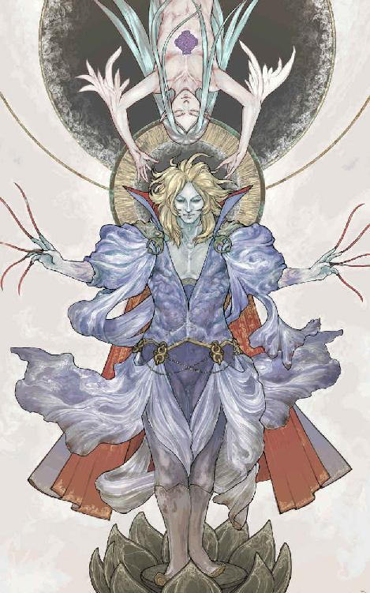
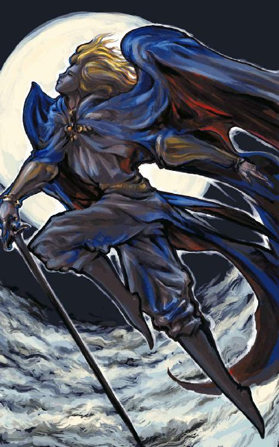

| 不死王 (幻想迷宮ノベル) | |
| ベニー松山 | |
| GENSOUMEIKYUU SHOTEN (2016) | |

ベニー松山
天は暗黒に染まっていた。煤煙のような雨雲が厚く層を成し、稲妻にその腹を鈍く光らせながら激しく渦を巻いている。
烈風を伴って、凄まじい雨が降り注いでいた。だが、それを豪雨などと呼んで良いものかどうか。
それはさながら滝だった。大瀑布から零れ落ちる水流のように、膨大な質量を持つ水の塊が途切れることなく大地に落下してくる。
地上は泥の色をした濁流に覆われていた。泡立つ激流は森を呑み込み、山を削り、大地を蝕んでいく。嵐ではなく、津波に襲われているかのような有り様だった。
その泥の海から辛うじて頭を覗かせている小高い丘の上に、ドワーフ族のものと思しき巨大な城館があった。
城館、と言っても、通常の館に当てはまる大きさではない。堅牢な城壁に囲まれたそれは、小さな都市と呼んでも過言ではない規模を誇っている。
しかも、その城館は文字通り氷山の一角にしか過ぎぬものだった。
城館の地下──岩盤質の丘をくり貫き、さらに地中深く網の目のように延びた広大な坑道こそが、この大陸のドワーフ族の大半が生活する地底王国の真の領土だった。城館は多重構造を持つ地下都市の最上層であり、ほんのわずかに地表に突出した部分でしかないのである。
良質のミスリル鉱を産出するこの土地に、最初のドワーフたちが王国の礎を築いたのはもう気が遠くなるほど昔のことだった。黄金以上に貴重なミスリルの細工に特に秀でた技能を持つ彼らは、新たな鉱脈を求めて坑道を掘り進み、数百世代を重ねた今ではこの蟻の巣のような王国が果たしてどれほどの深みにまで広がっているのか正確に把握している者はいないと言われている。その広大無辺な地底の領土には無数のドワーフが住み、大陸の他の種族を含めても一、二を争う巨大な都を形成していた。
しかし、それはもはや過去の話であった。
数百日に及ぶ異常な集中豪雨によって、王国はほとんど壊滅状態にあった。岩盤に支えられた丘陵部より下の都市中心部はすでに流入した雨水と泥土に水没し、現在も刻一刻と水位が上がりつつあるのだ。
もともと水は坑道の天敵である。だからこそそこを生活の場とするドワーフは排水に万全の備えを有していたのだが、莫大な雨量によって増大した地下水脈は次々と土壁を破り、その排水能力を遥かに越える水量をもって襲いかかった。民の多くは逃げ遅れたまま都市とともに没し、運良く上層に辿り着いた者は人口の百分の一にも満たぬ数であった。
基部の主要な支柱も水流によって破壊されていた。本来ならば支えを失った丘陵部も、とうに泥の海と化した都市の空洞へと崩れ落ちていておかしくない。
それを辛うじて支えているのは、ドワーフの王ゴルソムをはじめとする一族の魔導師たちが張り巡らせた強靭な魔法の力場だった。精霊神ニルダに愛されたかの都、聖都リルガミンの誇る絶対魔法障壁には及ばぬまでも、王の住まう城館を中心に丘陵部全域を包む結界は、さすがはドワーフを統べる術者たちの魔力を結集しただけのことはあった。
だが、それも滅亡までの時間稼ぎでしかない。今もドワーフの民は無情に這い登ってくる水に、限られた空間を上へ上へと追いやられているのである。
ゴルソムも、そして他の魔導師たちもそんなことは百も承知だった。統治者の義務として、ひとりでも多くの民の生命を救わねばならない。
しかし、打つ手はなかった。
大量の人員に長距離を瞬間移動させる呪文はある。そもそもは古代の戦での攻城法として編み出された魔法で、この呪文に対抗するべく城塞都市全域をカバーする広範囲魔法障壁も格段に発展したほどの代物である。大半が死に絶えたとは言えまだ数千の単位で残るドワーフの民を、その呪文なら十数回の分割ですべて転送することが可能だった。
問題は、転送先が存在しないことである。
災厄に見舞われているのは、この地域だけではなかった。彼らが連絡を結んでいる各地のドワーフの自治都市はおろか、情報を集めた限りあらゆる種族の都市──即ち大陸の全土がこの暴風雨の勢力下にあったのだ。
比較的高地に位置するこの都市は、むしろ幸運な部類に入る。低地や大河周辺の都市はあっと言う間に水に呑まれ、災厄が始まって百日と持たずに壊滅した。地下に住居を築くドワーフの性癖も災いしたのだろう。
さらに数日前までには、あらゆるドワーフ都市からの連絡が途絶えていた。いずれの都市もそれなりの力を備えた魔道君主に統治されてはいたが、洪水による圧倒的な水圧の継続に遂に防護魔法を維持できなくなったのだ。
他種族の居住地の中には、恐らくまだ健在であろう筈の強力な魔法に護られている都市も幾つかあった。エルフの王都エイセル・エルダスはその代表格であり、ノームの賢人の都サレムや人間族の城塞都市リルガミンも、このドワーフ最後の砦ゴレア・ドゥムより先に魔法障壁を失うとは考えられない。
だが、そのいずれも先の呪文で転送するには遠過ぎた。加えてこの三百年ばかりの間、ゴルソムから四代前の王の時代からドワーフは他種族と折り合いが悪く、このような状況で助けを求められるほどには互いを信頼していなかった。
そしてこの時、魔道王ゴルソムと側近の魔導師たちは市民を避難させる手立てを思案するどころではない窮地に直面していた。
城館の中庭。
そこは広大な庭園になっており、かつては王城に相応しく美しい草花と果樹に覆われていた。が、長期に渡る豪雨に陽光を遮られたため、今では見る影もなく荒廃している。
その庭園のほぼ中央、枯れ草を敷き詰めたような花畑に、十人あまりのドワーフがひとかたまりになって立っていた。全員が咳きひとつ漏らさず、息を詰めて一点を睨み据えている。
彼らが片時も目を離さずに見つめているのは、同じ花畑のやや離れた一画だった。
何かがあるわけではない。あるのは薄暗い虚無の空間のみ。それだけに、ドワーフたちの沈黙は無気味な緊張を孕んでいた。
庭園の上空からは、不可視の天蓋となった魔法障壁が城館目がけて降り注ぐ雨を弾く音が絶え間なく響いてくる。それはあたかも、これから始まる凶事を囃し立てる悪鬼のドラムのように鳴り渡っていた。
突如、雷光が空間を白に染めた。同時に激しい雷鳴が轟く。
その一瞬、彼らの網膜に焼きついた虚無が歪んだように映った。光に照らされた空間に、無数の異形の影が蠢いたかに見えたのだ。
雷鳴の残響が消え去るよりも早く、一団の中心に位置するドワーフが口を開いた。
「〝腐敗の大気〟を呼び起こすぞ」
重々しいその言葉に、一同は明らかに動揺した。一斉にその空間から、命令を下したドワーフに視線を走らせる。
そのドワーフは、他の者とは異なる豪奢な装束に身を包んでいた。
王冠を象った兜に、黒地に銀糸の刺繍の入った厚地のマント。ミスリルの細い鎖を幾重にも重ねて造られた鎖帷子の上には深紅の衣を羽織り、その両手のすべての指にはそれぞれ曰くありげな指輪が嵌まっている。握り締めた錫杖もミスリル製で、複雑な意匠が施されたそれは薄暗闇の中で冴えた光を放っていた。
杖に劣らぬ光を放つ鋭い双眸と、その表情を覆い隠すように生えた燃え立つような赤の長い髭。この男こそ、歴代統治者の中でも最も強い魔力と最も激しい気性を持つと言われる〝赤き顎〟、現ドワーフ王ゴルソムであった。
ゴルソムは猪首を巡らせ、配下の魔導師たちに炯々たる眼光を向けた。
「大した軍勢だ。ここで我らが敗れれば、魔法を持たぬ民は彼奴らに手もなく屠られることになろう」
「しかし──」
魔導師のひとりが、元の虚無に戻った空間と王とに交互に視線を移しながら言った。「〝腐敗の大気〟を使用しては、この庭園の広範囲が腐毒に汚染されることになります。陛下の居城の一部で、そのような......」
「誰に講釈しておる？」
王の一瞥を受け、魔導師は身を固くした。一族最強の魔導師であるゴルソムが、その呪文の特性を忘れている筈がなかった。
「彼奴らは呪文を退けることがままある。確実に仕留めるつもりなら、魔力で無効化できぬ系統の呪文を使わねばならん。よいか、我らが敗北すればこのゴレア・ドゥムは滅びるのだ」
王の言葉は何の誇張もない、真実の重みを持っていた。魔導師のほとんどがこの危険極まりない呪文の行使に賛意を持っていなかったが、その言葉の響きだけで今や全員が覚悟を固めていた。
〝腐敗の大気〟は一種の禁呪であった。対象となる空間の大気中にあらゆる物質を腐敗させる猛毒を発生させ、その効果範囲に含まれるものは生物・非生物を問わず瞬時に汚染してしまう。この呪文を受けた生物は確実に全身が壊死し、それが金属製の剣や鎧であっても一瞬に腐蝕が進行する。殺戮呪文としては小規模だったが、大気を変質させる呪文の特性である、どんな強大な呪文抵抗力をもってしても無効化できない絶対性を有しているのが最大の利点だった。
しかし、問題は魔法で生成されたその腐敗毒が長期間残留することだった。一度この呪文効果を引き出してしまえば、中和の魔法を使い続けても早くて数年、放置しておけば数十年の間その地域は汚染されたままとなるのである。数人の高位魔導師の補助を要するため敵地で使用するのは難しく、自国の領土で使えば不毛の大地が広がっていく。魔導師たちの躊躇いも無理からぬ、両刃の剣となる超難度の呪文であった。
それを王城の中庭で使用するというのだ。ゴルソムにそれだけの決意をさせる敵の襲来に、魔導師の中でも歳若き者たちは戦慄を禁じ得なかった。
詠唱が始まった。
ゴルソムを中心に、低く不安定な韻律を持った呟きが沸き起こる。呪文を修得しておらぬ術者たち──それでも決して未熟などではない大魔導師だが──は意識だけを同調させ、魔力を直接引き出すドワーフ王の念を強化するべく努めている。
それに呼応するかの如くに、眼前の空間が今度ははっきりと歪みだした。その一帯だけが陽炎に包まれたように、通して見える庭園の風景が奇怪に拗くれている。
時折、その空間の中に淡い炎が渦巻き、細い稲妻が疾る。しかしそれは非現実的な幻影で、どこか遠い世界の光景が二重に映し出されたかに見える。
そして唐突に、数十の真っ赤な火球が出現した。
虚無から生じたそれらは、針の穴のような一点から爆発的に膨れ上がり、歪曲した空間全域を一瞬に埋め尽くした。その紅蓮の炎の中で蠢動する巨大な影たちは、紛うことなく先刻の、雷光の下に照らし出された異形の軍勢にほかならなかった。
ドワーフたちの詠唱が一際力強くなった。〝腐敗の大気〟を呼び起こす寸前の、呪文詠唱の最終段階に入ったのだ。
しかし次の瞬間、詠唱は掻き消された。
ゴルソムと魔導師たちを、無音の空間が押し包んでいた。空気の音声伝達を封じ込める強力な結界が、いつの間にか彼らの周囲に張り巡らされている。
ドワーフたちは恐慌に陥った。
魔導師にとって、呪文を封じられるということは両手両足をもぎ取られるに等しい。こと魔法戦においては、それは確実な敗北を意味する。それゆえに彼らはこの呪文封じに対抗する魔法障壁を常に身に纏っており、彼我に圧倒的な魔力の差がない限りおいそれと沈黙させられる筈がなかった。
それがこれほど容易に、完璧に封じ込められてしまったのである。しかも火球の中の敵勢は、まだこの次元に実体化していないのだ。信じ難い事態であった。
「何奴か！」
ゴルソムが咆えた。さすがは一族の術者を束ねる魔道王である。ただひとり無音の結界を打ち破り、術を施したであろう何者かを探す。
その目に映ったのは、己のすぐ背後に立つふたつの人影だった。
ひとりは短身頑躯のドワーフよりさらに頭ひとつ小柄で、極端に大きな鼻の下に雪のような白髯を長くたくわえていた。矮躯だが、叡智を湛えた碧眼とその堂々たる姿が、それが一介の老人ではないことを如実に表している。
もうひとりは、その老人の倍近い身長を持っていた。ドワーフ族とは対照的に、全身の肉を鐫で削ぎ落としたような痩身である。髭のない端正な貌には深い皺が刻まれていたが、まだ老人と呼ぶほどには老いておらぬ。秀でた額には深緑の宝石を嵌め込んだミスリルのサークレットが輝き、撫でつけた純銀の髪と見事な調和を醸し出している。高貴な血筋であることは疑いようもなかった。
しかし何よりも、彼らがそこに存在している事実が豪胆なドワーフ王を狼狽させた。ゴレア・ドゥムを包む魔法障壁は極限にまで強化してある。眼前に実体化しようとするものたちですらこの空間への侵入に一昼夜を費やしているというのに、このふたりの異種族はゴルソムを含めた魔導師に気取られることなく、いとも簡単に結界内へと入り込んだのだ。
「御無礼仕る」
短躯の老人──ノームが共通語で会釈した。「しかし、かような呪文の行使はそのものどもの思う壷。ここは我々にお任せ願う」
「貴様は──」
「充分な挨拶を交わす暇はなさそうだ。次元の壁が破れるぞ」
言い放ち、長身痩躯の男──エルフはまだ言葉を封じられたままぱくぱくと口を開閉しているドワーフの一団を回り込んだ。
ノームも同様に魔導師たちの前に進み出て、ふたりは呪文の詠唱を開始した。
火球の中の巨影は、すでにはっきりとした姿を取り始めていた。
酒樽を思わせる小山のような巨体と、それに不似合いなほど短い手足。しかしそれらは凄まじいまでの筋肉の束に包まれ、暗紅色の甲皮にぶ厚く覆われながらもその怪力を窺い知ることができる。内側に弧を描いた太い鉤爪にかかれば、人の胴など簡単に引き千切られてしまうだろう。
巨躯に比して、盛り上がった両肩の間に挟まれた頭部は小振りであった。大きく裂けた唇からは鮫のように幾重にも並んだ牙が覗き、その上に感情のない落ち窪んだ小さな眼が光っている。ひしゃげた頭部は深海の妖魚を想起させたが、両脇から生えた渦巻き状の角がその印象を打ち消し、より穢らわしい呼称を記憶の奥底から呼び覚ます。それは人という種が生まれた瞬間から、本能的に知っていた敵の記憶なのかも知れなかった。
悪魔、と。
その醜悪な異界の怪物が二十体あまりも、一時にこの世界へ実体化しようとしているのだ。
もはや〝腐敗の大気〟を呼び出すことはできなかった。先刻の詠唱は中断して集中しかけた魔力が霧散してしまったし、新たに唱え直すには遅きに失した。それ以前に配下の魔導師たちが沈黙させられたままでは、ゴルソムにこの呪文を扱うことはできぬ。
魔法障壁を破って王国に侵入し、あまつさえ悪魔への呪文攻撃を妨害したエルフとノームに、誇り高いドワーフの王は激しい怒りを感じていた。しかし同時にこの場をふたりの異種族に任せようと判断したのは、一時的にせよ己の呪文をも封じたその腕を信じたからであった。ゴルソムにとって屈辱的な出来事ではあったが、それは取りも直さずふたりの魔力が並大抵ではないことを示している。
また、彼らがドワーフに悪意を持っているなら、呪文を封じる前に──あるいは封じた直後に呪文攻撃を仕掛けてくる筈であった。折り合いの悪い他種族と言えど、少なくとも悪魔以上に敵対的であるわけはない。それがゴルソムに彼らを静観させた主たる理由だった。
だが、ふたりの詠唱する呪文が何であるのかを知り、彼の脳裏に驚愕と疑いの念が一瞬に沸き上がった。
それは、〝爆炎〟と呼ばれる攻撃呪文だった。異なる次元で引き起こした核爆発のエネルギーのごく一部をこちらの空間に転移させ、一千度程度の火炎と衝撃波を放射する破砕型焼殺呪文である。
そして、ゴルソムに言わせるなら、こんな呪文は子供騙しの花火のような代物であった。
魔力も何も持たない相手に使うなら、確かに〝爆炎〟程度でも致命的な殺傷呪文となるだろう。事実、ここに集う魔導師たちから見れば初歩的な魔法のひとつでしかないこの呪文を修得しただけの下級魔術師も、魔法の心得のない民にとっては絶対的な畏怖の対象となっている。この時代、それほどまでに魔力を持つ者と持たぬ者の力の差は大きかった。
しかし、その眷属の多くが魔法に対する無効化能力を生得しているという魔界の住人──それも特に強大なこの種の悪魔が相手では、〝爆炎〟のように単純な呪文はほとんど効果を発揮しない。十中九は完全に無効化されると考えて良かった。
実体化と同時に殲滅できなければ、状況は一気に悪化する。魔力ではドワーフたちが優っているにせよ、一体ですら侮れぬ悪魔をこれだけの数相手にする──しかも続々と新手が召喚される可能性も高い──となれば、今度は〝腐敗の大気〟以上にリスクの大きな禁呪を使わぬ限り勝算は低い。
やはりこのふたりは、我々ドワーフ族を陥れようとしているのではないか──そうゴルソムが考えた時、呪文は彼の知る〝爆炎〟とは異なった韻律でその詠唱を終えていた。
赤い光球が消えた。悪魔が一斉に実体化する。
次の瞬間、密集する悪魔の中心に閃光が疾った。針のように細い灼熱の光条が、その一点から四方へと無数に放出される。
そのあまりの目映さにドワーフたちの視界は闇に染まった。最後の一瞬に捉えた残像は、迸る光線に針ぶすまとなる悪魔たちの凍てついた姿であった。
数秒後、彼らの視力が回復した時には、その姿は斑に焼け焦げた地面に積み重なる屍の山と化していた。
全滅である。一体残らず全身を閃光に灼き貫かれ、一咆えも許されることなく絶命していた。
エルフとノームが唱えたのは〝爆炎〟の応用呪文であった。この次元に現出する爆発のエネルギーを空間の一点に封じ込め、内圧が膨れ上がったところで結界に極小の開放点を無数に設けてやる。高圧によって二次的エネルギーに変化した爆風と炎は、魔力では無効化できない熱線となって攻撃範囲内の対象物に襲いかかるのである。
原理は単純であったが、実際に行うには寸分の狂いもない高度な魔法制御が必要だった。まして他者と複合して呪文効果を高めるなど、両者に超絶的な技巧とセンスがなければできるものではない。それをこのふたりは、こともなげにやってのけたである。
エルフにせよノームにせよ、そんな術者がおいそれと存在する筈がなかった。
ゴルソムは鋭い眼光を向けると、ひとり進み出て彼らと向き合った。
「我が一族の領土へ断りなく侵入した非礼は問わぬこととしよう。それより貴公らの要件、いかなる類のものか」
口調が若干改まっていた。それを聞き、エルフが口元だけに軽い笑みを浮かべる。
「さすがは音に聞こえた魔道王〝赤き顎〟、我々の素性に見当がついたと見える。されど、まずは名乗らせていただこう。我が名はアルフォーリ、エルフ王アルドウェンが息子」
「ノーム一族を預かるシャイロンと申す。会するのは初めてのことでしたな」
ふたりの名に、ようやく口を利けるようになったドワーフの魔導師たちがどよめいた。口々に〝永遠の王子〟や〝賢者シャイロン〟などと囁く。ゴルソムがそれを制した。
「やはりな。貴公はもしやエルフ王その人ではあるまいかと思うたが、その嗣子もまた優れた術者だとは聞いている。ノーム王シャイロン殿ともども、噂に違わぬ達者よな」
「要件に入ろう」
嗣子──世継ぎという呼び名に何故か不快そうに眉を顰め、エルフの王子アルフォーリはその会話を打ち切るように言った。「ドワーフ王ゴルソム殿の力をお借りしたい。いや、正しく言えばゴルソム殿が率いる魔導師衆を含めた、その魔力のすべてを」
「何」
「邪悪なる破壊の風雨を止め、異界の魔物よりこの世界を救わんがために。それには貴殿と、麾下の魔導師諸侯の協力が必要なのです」
賢者シャイロンが後を受けた。「この大陸で生き残った術者のほとんどが、すでにエルフの王都エイセル・エルダスに集結しておりましてな。後は貴殿一行の到着を待つばかりとなり、御無礼とは知りつつも我々がこうして推参した次第」
「我らドワーフと友好的ではない二族の貴人、直々の招待とは痛み入る」
再びざわめく配下を圧して、ドワーフの魔道王は太く轟く声で応えた。
ゴルソムにとって、ふたりの話はさほど驚くべきことではなかった。むしろ手付かずになっていた問題の暗示が向こうからやってきたようなものであった。
自然の現象では決してあり得ない異常な暴風雨の継続や、これまでは初歩の魔法に属する召喚系呪文によって呼び出され、魔導師の走狗として操られる存在に過ぎなかった魔族が群れをなし、自力でこの次元への侵攻を開始した事実。これらの尋常ならざる事態が果たして無関係であるのかどうか、ゴルソムも一方ならず疑い続けていた。だが、最初の決壊以来ゴレア・ドゥムを支える魔法障壁の維持に追われ、それを確かめるための有効な調査手段も見つからぬまま現在に至っていたのである。それだけに、彼はエルフたちが語る情報の断片の真実性を敏感に嗅ぎ取っていた。
ゴルソムは用心深く猜疑心の強い人物ではあったが、それによって身を滅ぼすほど愚かではなかった。彼はエルフたちの要請を飲むことによって、少なくとも一族の窮地を打破できるであろうと即座に判断した。
「その招待、受けようではないか。いずれにせよこのゴレア・ドゥムは長くは持たぬ。だが、その前に我が民をどこか水の危険のない場所に避難させなければならぬ」
「お任せ願おう」
アルフォーリが言うや否や、彼らの周囲に次々と丈高い人影が転移してきた。十人あまりのエルフである。侵入していたのは、アルフォーリとシャイロンだけではなかった。
「危険がないとまでは言えないが、ここから転送できる範囲に我らやノーム一族の小集落が幾つか残っている。しばらくの間ならそれらの村落で充分に収容できよう。すでに受け入れの手筈は整えてあるゆえ、あとはこの者たちに命じて送り出すが宜しかろう」
エルフ魔導師団の鮮やかな侵入に半ば呆気に取られたドワーフたちを尻目に、アルフォーリは涼しげな表情をドワーフ王に向けた。これだけの術者を伴っての秘密裏の入城は、考えようによってはドワーフの本拠地などその気になれば赤子の手をひねるより容易に陥落できるとほのめかすような示威行動である。
この侮辱とも取れる行為に、ゴルソムが爆発しなかったのは奇跡と言えた。もっとも、怒りに任せてエルフたちに魔法戦を挑みかけたところで、ドワーフ勢の勝ち目は万にひとつもなかったであろう。先の呪文封じひとつを取ってみても、最古の人類とされるエルフ族が蓄積してきた魔法技術がドワーフのそれを遥かに上回っていることは明らかだった。
髭の赤が染み出したように紅潮した顔で、配下の魔導師たちが震え上がるほどの大音声で命を下すと、ゴルソムは憎々しげにアルフォーリを睨めつけた。その烈火の如き視線を、エルフは何ほどにも感じていないかのような鏡面の穏やかさで受け止めている。
エルフとドワーフの術者が短距離テレポート呪文の〝転移〟で地底部に跳んだ。ノーム王シャイロンが民の転送先を正確に指示すべく姿を消した時、ようやくゴルソムは低く呟いた。
「御先祖が貴公を快く思わなかったのも道理よな」
齢千年を重ねる〝永遠の王子〟は、無言のまま薄く笑った。
数刻の後、かつて十数万のドワーフを擁した巨大地底都市ゴレア・ドゥムは無人の廃墟となった。
やがて魔法障壁の結界が消え、支えを失った丘陵部は城館ごと崩壊を開始した。それは泥の海に巨大な渦を生み出しながら水没し、遂に地上から完全に姿を消した。
荒れ狂う風雨が、ゴレア・ドゥムの断末魔のように激しく叩きつけていた。
〝──愛しているわ、ヒューン。死が訪れるその時まで、私たちは一緒よ〟
薄れゆく意識の中で、ヒューンは夢にまで見た誓いの言葉を聴いた。
どこまでも深い、鬱蒼と茂る巨木に覆われた広大な樹海。霧雨に濡れた獣道に倒れ、全身を毒に蝕まれた彼の生命は今まさに尽き果てようとしていた。
五感はすでに正常な働きを失っている。湿った地面に体温を奪われる感覚ももはやなく、半目に開いた瞳は白く濁り、幽かな陰影をつけた薄闇の他は何も映ってはおらぬ。
その視界の一部に、光が灯ったようにヒューンには思えた。
銀色の光は揺らめきながら、少しずつ近づいてくる。次第に影を強める闇を背景に、それはやがて美しい女の貌となった。
──エレシア......。
紫色の唇が、その名をなぞるように微かに震えた。
彼には判っていた。それが死の直前に訪れた幻にしか過ぎないと。しかしそれでも構わないとも思った。最期の瞬間に、求め続けた愛する者の幻影を抱いて死ねるのだから......。
──それとも迎えに来てくれたのか、エレシア。そうさ、俺たちはこの世を去ってからも、ずっと一緒だ......。
瞳が急速に光を失い始める。意識が深淵に沈み込む瞬間に、女の幻が何か奇妙な韻律の言葉を呟いているように思えたが、もうヒューンには興味のないことであった。
そして、すべてが漆黒に呑まれた。
どれだけの刻が流れたのか──。
瞼の外側で橙色の光が躍っていた。顔に心地好い暖かさが感じられる。肉の焼ける香ばしい匂いが鼻腔をくすぐった。
ヒューンは恐る恐る目を開けた。
眼前で、焚火の炎が赤々と燃えていた。
生きている。そう気づいた時、炎の向こうに人の貌が浮かび上がった。
真っ直ぐに流れ落ちる銀の髪と、白磁を思わせるなめらかな肌。形の良い唇は淡い朱に彩られ、切れ長の瞳は森を映したような深緑。細い鼻梁と繊細な顎、そして上端の尖った耳までもが絶妙の線を描き、一点の非の打ちどころもない容貌を造りあげている。
それは妖しくも美しい、若きエルフの貌であった。
今にして思えば、あの幻はこのエルフだったのだとヒューンは思い至った。同時に、混濁した意識に垂れ篭めていた薄靄が風に吹き散らされるように晴れていく。
記憶の混乱から立ち直った瞬間に、ヒューンはその岩のような筋肉に覆われた巨体に似合わぬ、稲妻の迅さで飛び起きていた。習慣的に伸びた右腕には、腰につけられたままの鞘から引き抜いた愛剣を握り締めている。
そこは彼が倒れていた場所からやや離れた、隠花植物に蔽われた小さな空き地であった。樹海は夜の帳に包まれ、焚火の光が届く輪の外は黒々とした闇が蟠っている。霧雨は止んでいたが、たっぷりと湿気を含んだ夜気は肌に冷たく纏わりつく。
電光石火の動作に驚いた風もなく、エルフは腰を下ろしたまま無表情にヒューンを見上げていた。
同じ人間族ならまだ十七、八といった外見であったが、当節でも二百年の寿命を持つエルフに当て嵌めるなら、まず自分の倍は生きているだろうとヒューンは踏んでいた。線の細さに不釣り合いな落ち着きも、この長命種には歳相応のものなのだ。
「あんた、何者だ。何でこんなところにいる？」
ヒューンが訊ねた。が、エルフはまるで大理石の彫像のように、微動だにせずに見つめ返すばかりである。もしや共通語が通じないのではないかと考えるほどの沈黙を挟んで、ようやくその唇が開いた。
「何故助けた、とは訊かないのか」
流暢な共通語であった。しかしヒューンを驚かせたのは、高く澄んだ声音ではあるが、それが明らかに男のものだったことである。
ヒューンは改めてエルフを眺めた。娘のように美しいが、端正に整った貌は確かに中性的である。それでも、この無表情が微笑に変わったなら、その辺りの美女などでは太刀打ちできないほどに男たちを惹きつけるだろうと彼は思った。
筋肉の中に張り詰めた緊張を夜気に溶かし、剣を収めるとヒューンはその場に腰を下ろした。エルフとの間を隔てる焚火の上では獣の肉が焙られ、脂が滴り落ちては食欲を刺激する香りを立ち上らせている。そのせいか空っぽの腹が鳴り、彼は照れ笑いを見せた。
「助けてもらった礼が先だったな。ありがとうよ。俺はヒューン、見ての通りの人間族だ」
「君のために焼いたものだ。遠慮しなくていい」
エルフは肉を示し、続けた。「私の名はアルドウェン」
「アル──ドウエ、ドウェンか。エルフの名前ってのは俺たちには発音が難しいもんだな。大体、エルフとこんなに近くで話したことなんざ初めてだよ」
早速肉に囓りつき、大きな口一杯に頬張りながらヒューンが言った。その反応に、少年と呼んでも違和感のないほどに華奢なエルフはわずかに目を細めたが、すぐに何の感情も読み取れぬ能面のような無表情に戻った。
「訊ねてもいいかい？」
兎らしき獣肉をあっと言う間に平らげ、指に付いた脂までも舐め取って人心地つけてから、ヒューンはその様子を無言で見守り続けていたアルドウェンに向き直った。沈黙を保ったまま、エルフが頷く。
「なあ......あんた、魔法使いなんだろ。それも、癒しの術が使えるほどの」
気を失う寸前にアルドウェンが呪文を唱えていたのを、ヒューンは思い浮かべていた。
「──そうだ」
「エルフって連中は、俺たち人間なんざ歯牙にもかけないって聞いてる。そのエルフの、それも魔法使いのあんたが、何だってくたばりかけてた俺を助けてくれたんだ？」
「これが街中の路地裏などであったら、素通りしていたかも知れないな」
アルドウェンは淡々と答えた。「何故私がこのような場所にいるのか、君も疑問に思ったのだろう？ それと同じことだ。正気の者が近づく筈もないこの森で、魔導師とも見えぬ人間と出会った。君に興味を抱いたとしても不思議はないだろう」
「こんな森か。どうやらお互い、迷い込んだってわけじゃなさそうだ──」
木々の奥の暗闇からけたたましい怪鳥の叫びが響き、ヒューンは言葉を切った。梢を抜ける羽音が夜空の高みに遠ざかると、辺りは再び夜の静寂に支配される。
「まあ、あんたがどんな目的であんな場所に行くのかなんて、俺にとっちゃどうでもいいことさ。根掘り葉掘り訊き出そうなんざ思っちゃいないよ」
「──」
「俺のほうは、別に何を訊かれたって構やしない。助けてもらった礼ってつもりはないが──そうだな、今の食事のお返しにでも、俺が〝森の彼方の国〟を目指す理由を話そうか。どうせ夜は長いんだ」
ヒューンの話にさほど興味があるようには見えなかったが、アルドウェンは軽く、しかしはっきりと首を縦に振った。ヒューンはがっしりとした顎に笑みを浮かべると、茶色の瞳で揺らめく炎を見つめ、語り始めた。
ヒューンは闘奴だった。いや、正しくは十八の歳に、不当にも闘奴に落とされた。
彼はこの樹海からさして遠くない、鍛冶の盛んな辺境の国に生まれた。腕の良い職人の父を持ち、いずれはその跡継ぎとして平和な町職人の人生を歩んでいく筈であった。
事実、十八で婚礼を挙げたその時は、ヒューンは幸福の絶頂にあった。
幼馴染みのエレシアは婚約を決めてからの数年で、蕾が開き始めたかのように日毎に美しさを増していった。そして婚礼の直前には、彼女を知るすべての男がヒューンに羨望の眼差しを向けるほどに、その美貌は大輪の花を咲かせていた。
しかし、幼い頃から互いに理解し合ってきたエレシアの内面を深く愛していたヒューンにとって、知らずに男を魅了してしまう彼女の美貌は転落の引き金でしかなかった。
美しくなり過ぎたエレシアの噂は、不幸にもその地方を治める領主の耳にまで届いた。領主は婚礼の日に臣下を差し向けて噂の真偽を確かめさせ、その報告を受けて自らエレシアを検分するために遠路をやって来た。
好色な領主は、一目見ただけで彼女を手に入れたくなった。そしてすぐさま、それを実行に移した。愛し合うふたりは強引に引き裂かれた。
そこまでなら、どこの専制君主でもやりそうな話である。だが、悪いことにその領主は偏執的な狂人に属する人物だった。
無理矢理エレシアを側妾にすると、今度はたとえ短期間でも彼女と閨をともにしたヒューンの存在が許せなくなった。完全に狂人の発想であったが、その国では領主の権威は絶対だった。ヒューンの家族は捕えられ、父母はおろか幼い弟や妹までもが謂れのない罪で拷問を受け、惨殺された。
ヒューン自身は闘奴に落とされた。領主の退屈しのぎのためだけに、生き延びる権利を賭けて他者と殺し合う奴隷である。領主は、ヒューンが絶望に駆られたまま無惨に殺される姿が見たかったのだ。
だが、その期待を裏切って彼は勝ち残り続けた。
暗い石牢に閉じ込められ、太陽の下に出られるのは闘いの時のみ。生きていくのに必要な最低限の食事しか与えられず、時には牢に迷い込んだ鼠さえも貪る。そして、自分が生き残るために同じ境遇の闘奴たちを殺し続ける──。
ヒューンがその生き地獄に耐えることができたのは、自分から何もかもを奪い去った領主への復讐と、いつの日か再びエレシアを取り戻すという目的があったからだった。それは彼に、他の闘奴にはない凄まじいまでの活力を与えていた。
十年間、二百回あまりの死闘を勝ち抜きながら、ヒューンは不可能と言われる脱走の機会を窺い続けた。そして遂に、待ち望んだチャンスが到来した。
彼は牢から抜け出すと、その足で領主の城に潜入した。
領主の護衛には、三人の魔術師が当たっていた。いずれも〝爆炎〟程度の呪文しか修得していなかったが、他国の術者に命を狙われるわけでもない辺境の小領主の警護には充分過ぎるほどだった。少なくとも、魔法という武器を持たない者にとっては鉄壁の守りである。
しかし、ヒューンはこの時のため、それに代わる牙を研ぎ澄ましていた。
魔法が圧倒的な力を誇るこの時代、魔力によって強化された剣などが戯れに造られることはあっても、それを扱う技能は全く発展しなかった。戦いの帰趨を左右するのは常に魔法であり、一瞬に数千の兵士を吹き飛ばす禁呪文を操る魔道王の前では、剣の力など無きに等しいものだった。
だが、相手が領主の取り巻き魔術師程度ならばつけいる隙はある。そう信じ、闘奴として過ごした十年、ヒューンはただひたすらに剣技を磨き続けてきた。呪文の詠唱よりも早く間合いを詰める俊敏さと、術者が纏った魔法障壁を突き破る破壊力──それを身につけるために、彼は己の肉体を極限まで鍛え上げた。
三人の魔術師は、さしたる実力を持たぬにもかかわらず魔法の絶対優位を過信していた。目の前に剣を構えたヒューンが現れた時も、彼らは呪文の代わりに嘲笑を浴びせかけた。
ふたりまでが笑みをへばりつかせたまま絶命した。最後のひとりが悲鳴にも似た詠唱を始めた瞬間に、ヒューンの剣はその心臓を深々と抉っていた。
他に護衛はいなかった。彼は易々と寝室に侵入し、愛妾のひとりと戯れる領主をベッドから引きずり下ろした。
領主はもはやヒューンのことを忘れていた。思い出してもらうため、この狂人が彼の家族にしたように、ヒューンはその指の一本一本を順番に、関節ごとに切り落とした。足の指にかかった時点で、領主はようやく膨大な彼の犠牲者の中から哀れな鍛冶職人の一家を挙げることができた。
そしてヒューンは、愛する妻がどんな運命を辿ったのかを聞き出した。悲嘆に暮れ、一向に心を開こうとしないエレシアを、この狂領主は半年も経たぬうちに奴隷商人に売り飛ばしたのだ。
それを聞き終えた瞬間に、彼は怒りに我を忘れた。正気に戻った時には、領主は原形を留めない血塗れの肉塊となっていた。
それから二年あまり、逃亡したヒューンはひたすらエレシアの消息を追い求めた。
頑なに心を閉ざし続けた彼女は、買い手が現れてもすぐに売り払われ、複数の商人の手によって流転を重ねていった。それでも足跡を辿ることができたのは、その美貌が多くの者の記憶に灼き付いていたからであった。
そしてとうとう、ヒューンは妻の最後の消息を突き止めた。
樹海にほど近い集落の豪商に買い取られたエレシアは、村外れに建てられた塔に幽閉されて最後の数ヶ月を送ることになった。始めは足繁く通ってきた豪商もろくに口を利こうともしないエレシアにすぐ愛想を尽かし、彼女は日々を孤独のうちに過ごした。時折鉄格子の嵌まった窓から遠い空を見上げる姿は、通りかかる村人が思わず息を呑むほどに美しく、悲しげだったという。
やがて、何度目かの満月の夜がやってきた。
狼の遠吠えがやけに長く続く夜だった。この晩、巨大な蝙蝠が月下に舞い狂う姿を多くの村人が目撃した。
翌朝、エレシアは塔の密室から煙のように消えていた。迷信深い村人はそれが樹海の彼方から忍んできた魔物の仕業だと信じて疑わなかった。美しき囚われ人は、夜魔に誘われて〝森の彼方の国〟に連れ去られたのだと。
その話をヒューンが耳にした時、すでに三年が過ぎ去っていた。
よもやエレシアが生きているなどとは、彼も思っていなかった。ただ、それならば彼女がどのような最期を迎えたのか、せめてそれだけは確かめておきたかった。果たせなかった誓いの残滓のみが、生の目的を失ったヒューンを現世に縛りつけていた。
辺境の国々にも長い雨が降り始めた頃、彼は樹海へと旅立った。
伝説の、不死者の都を求めて──。
ヒューンが話し終えた後も、アルドウェンは長く沈黙を守っていた。しかしその間も、深緑の瞳は真っ直ぐにヒューンの目を覗き続けていた。
ややあって、彼は低く呟いた。
「人間族にも様々な者がいるのだな」
「様々？」
「ああ」
怪訝そうに聞くヒューンを指し、エルフは続けた。「君が殺した領主は、我々エルフが捉えている人間族の傾向の極端な一例だ。即ち、短命であるがゆえに刹那的な欲望に衝き動かされ、自己の行動の是非を省みることがない。本来平和な治世を約束すべき統治者が、むしろ民を苦しめるだけの支配者となる──」
「統治者の血筋に生まれた奴等なんて、そんなもんじゃないのかね。だから高い税を搾り取られて、好き勝手な圧政を敷かれてもみんな我慢してるんだろ？ まあ、その領主を叩き殺した俺が言うのもおかしな話だがな。それとも、エルフは違うってのかい」
「まるで違う。特に、今から二千年以上の昔、エルフの民が望む限りの時を老いることなく生きることができた時代はな」
アルドウェンの翠玉の瞳が、ふっと遠くを見つめた。距離ではなく、彼方に過ぎ去った時を遡る老人のような表情だとヒューンは思った。が、次の瞬間にはエルフは元の美しい少年の貌に戻っていた。
「まあ、それはまた別の話だ。しかしエルフの寿命がせいぜい二百年となった今でも、己の人生を正しく、美しく送りたいと望む者は少なからず存在しているよ」
「正しく美しい人生だって？」
「我々の道徳観において、許されざる行為を決して犯さない──そんな人生だ。殊に為政者ともなれば、その領主が行ったような非道はすべて歴史に記され、後世にまで伝えられることになる。エルフの統治者にとって、それは最大の恥辱となる」
「自分の死んだ後の評判が気になるってのか。だったらその歴史を記した本なり何なりを書き換えちまえばいいだろう？ 権力を持ってる奴等なら、そんな真似は造作もないだろうによ」
「他の種族の統治者は良くやるらしいな。だが、我々は伝統的にそれを許さない」
「許さないも何も、王や領主のやることだろ？」
その言葉にアルドウェンは小さく頭を振った。揺れる銀髪がきらきらと炎を反射する。
「許さないのは自分自身なのだ。仮に誰にも気取られぬように邪な行いをしたとしても、その記憶は死ぬまで己の中にある。まして不老不死の時代のエルフとなれば、半永久的にその記憶に苛まれることになるのだ。史書に偽りを記した過去など、到底永遠に背負ってはゆけぬ」
「へええ」
ヒューンは率直に感嘆の声を漏らした。「俺も餓鬼の頃、不死の時代のエルフが羨ましいと思ったもんだったがな。寿命が長いなりの苦労ってのもあるもんだ。それじゃあ、もしその耐えられない記憶とやらを背負っちまったとしたら、その不死エルフはどうするんだい」
「止むに止まれず、道徳から大きく外れた行動を取ることになった不死エルフも存在した。そのほとんどが永劫の悔悟に耐えられずに死を望んだが、あらゆる生命を重んじる我々の一族では自ら命を断つ行為も禁忌に属している。待っていたのは、まさしく拷問のような日々だ。許されるのは運良く病魔に冒され、死を迎えた時──」
「......」
短命種たる人間族のヒューンには想像のつかぬ話であったが、その延々と続く苦悶の凄まじさは朧気ながら理解できた。死に焦がれる不死の罪人！
短い沈黙が流れた。
「......話を元に戻そう」
アルドウェンが言った。「その領主が人間族の一端だとするなら、対照的な一端は君だ」
「俺が？」
「そうだ。短い生に固執するからこそ、領主のように欲望のすべてを満たそうとする者が生まれる。だが、君は妻の──恐らくは現世にない死者との誓約を重んじ、敢えて死地に赴こうとしている。あの〝森の彼方の国〟、ファールヴァルト公国がどのような場所であるのかを知りながらな」
「あんたは、俺が死にたがっていると言いたいのか」
「違う、と言うのか？」
間髪を容れぬエルフの問いにヒューンは押し黙った。
「不死者の都に生者はいないのだよ。そこには君の妻の最期を看取った者など存在しないのだ。そして君はむしろ、妻と同じ場所で人生を終えたいと考えている──それはもはや自殺と何ら変わりがない」
意識の底を切り裂き、その下に隠れた願望を引きずり出す刃物のような言葉だった。動揺を隠し切れず、ようやくヒューンは応えた。
「......そうかも知れないな。だが、せめてエレシアの最期の様子を知りたいってのは本当だ。そいつを果たすまでは少なくとも死にたくはない」
「ともに行くか」
唐突にアルドウェンが言った。「それを知る存在があるとすればただひとり、私が会おうと考えている者だけだ。ついて来るか？」
願ってもない申し出だった。腕前のほどは判らないが、治療の呪文を会得するエルフの魔術師と同行すれば、まだ先の長い樹海行の危険が激減するのは確実だった。それに、ヒューンが死闘の中で培った直感が、アルドウェンが並の術者ではないと告げていた。このエルフについていけば、あるいは──。
「ありがたい話だ。だが、何故だい？」
「まだ君に対する興味が尽きていないということもある。私が知る限りたとえ低級な魔術師相手でも、三人を剣で打ち負かした者などこれまでに存在しなかった。このまま放っておいて、見す見す死なせてしまうのは惜しい」
「......」
「しかし、それ以上に何かが私に告げるのだ。君とここで別れてはならないとね。これは私の──いや、我々の目的に関わる予知なのかも知れない......」
どこかで梟が鳴いた。さっと流れた微風が焚火を煽り、揺らめく炎がエルフの貌に複雑な陰影を躍らせた。
「ともに、来るか？ 一夜にしてファールヴァルトを死都に変えた、不死王のもとへ──」
ヒューンは無言のまま、アルドウェンから目を逸らすことなく、深く頷いた。
翌朝早く、ヒューンとアルドウェンは出発した。
夜明けとともに、灰色に曇った空に再び細かな雨が舞い始めていた。昼なお暗い緑の屋根の下、道なき道をふたりは樹海の奥に向かって歩き続けた。
ふたりは至って軽装だった。ヒューンは獣皮をなめした革鎧を着込み、腰に例の両刃剣を吊しているのみである。アルドウェンは薄絹のローブを纏い、同様に薄く、しかし丈夫そうなマントを羽織っている。
しかし、アルドウェンは目を惹く品をふたつばかり身につけていた。
ひとつは剣──ヒューンのものに比べて遥かに細身で、刀身の付け根に青白い光を帯びた宝玉が嵌め込まれた長剣だった。剣自体はさほど変わった代物ではなかったが、魔術師であるアルドウェンが帯剣しているという点が奇妙である。
もうひとつは、首に細い鎖で下げられた薄紫の護符だった。ペンダントと呼ぶには大振りで、複雑な形状のそれは胸元で常に淡い微光を放っている。ヒューンが知る由もなかったが、そこには神話時代と呼ばれる上古に使われていた古代のエルフ文字が刻まれていた。
その護符の力なのか、彼らは何の障害にも遭わぬままに数日を旅した。この森に棲むと言われる獣人の類はおろか、ヒューンに毒を撃ち込んだ土蜘蛛ですら一匹たりとも姿を現さない。霧雨が続く中を、ふたりはひたすら樹海の奥に歩みを進めた。
深部に進むにつれ、森は次第にその様相を変え始めた。同じ樹木でありながらも、より巨大に、邪悪にねじ曲がったものが増え、繁り狂う暗緑色の葉は天井のように頭上を覆い尽くしている。
兎や栗鼠などの小動物の姿も全く見当たらなくなっていた。まるであらゆる生物がこれ以上踏み込むのを避けているかのように、本来生命の気配に満ちている筈の森は不気味な静寂に支配されていた。
そして、ヒューンとアルドウェンが出会って七日目の黄昏時──。
不意に森が開けた。ふたりの眼前に、切り開かれたらしい大きな空間が広がっていた。
雨は止み、霧が漂っている。薄暮の中、広場には人間の倍ほどの高さの、無数の影が林立していた。しかし、動くものは何ひとつない。
広場の入口で踏み留まったアルドウェンは、魔法の光を生み出す〝恒光〟の呪文を唱えた。柔らかく清冽な光がエルフから溢れ、薄闇に沈みかけた空間を──群れなす影を照らし出す。
知らず、ヒューンは呻いていた。
影の正体は大地に打ち込まれた丸太の杭であった。それがさながら林のように、広い空き地全体を埋め尽くしている。
そして、その無数の杭のすべてに、半ば白骨化しかけた串刺しの屍が掲げられていた。
露となったその光景は、酸鼻を極める凄まじさであった。
多くの骸は肛門から突き立てられた丸太の先端を口から突き出した形で串刺しにされ、ある者はその反対に頭を地面に向けて逆さまに掲げられ、またある者は臍から背中までを突き通されて杭上に晒されていた。それはまるで考えつく限りのバリエーションを陳列した串刺し刑の品評会だった。
風化しかけてはいたが、犠牲者が老若男女を問われなかったことは明らかだった。中には母親らしき屍と同じ杭に突き立てられた赤児の姿もあり、一切の容赦もなく処刑が実行されたことを窺わせた。
だが、その時点ではまだ、この地獄絵図の真におぞましい姿は隠されたままだった。
ヒューンとアルドウェンがその敷地に足を踏み入れた瞬間、静寂の仮面は滑るように剥がれ落ちた。
地の底から這い上ってきたような呻き声が、はじめにふたりの耳に届いた。
生命の気配はない。それなのに、ざわざわと蠢く気配が空間に満ち始める。声にならない苦悶の叫びが大気を震わせているのが肌で感じ取れる。
それは魔の跳梁する夜が訪れたからなのか。それともふたりの生者の気配に目覚めさせられたのか。
串刺しの骸たちは今や一体残らず朽ちかけた手足を緩慢に波打たせ、杭の上で悪夢の如き舞踏を繰り広げていた。
彼らは屍ではなかった。かくも凄惨な姿になり果てながらも、未だ苦痛から解放されぬままに苛まれ続ける、死から見放された亡者の群れであったのだ。
立ちすくむヒューンに、無数の落ち窪んだ眼窩に灯る燐光が注がれていた。彼らは口々に生命ある者への呪咀を漏らし、死を渇望して剥き出しの歯を噛み鳴らした。
──この中にエレシアがいるのかも知れない。あの美しかったエレシアがこいつらと一緒に俺を威嚇しているのかも知れない！
決して考えてはならぬ妄念に取り憑かれかけた時、アルドウェンが肩を揺すった。感情を見せぬ貌からわずかに血の気が退いているように見えたが、それは魔法の光が見せる錯覚とも思えた。現にエルフの声は微塵の乱れもなく、落ち着き払っていた。
「この亡者たちが串刺しにされたのは同時期、千年以上も昔のことだ。君の妻──エレシアはここにはいない」
「千年だって？ まさか......まだ肉が溶け落ちずに残ってるってのに......」
「不死の魔力だよ。この者たちに死を与えず、骨塵と化すことすら許さない邪悪な不死の波動──我々は遂に、不死王の領土に踏み込んだのだ」
亡者のざわめきが呼んだのか、艶めいた風が垂れ篭める霧を吹き散らした。途切れた緑の屋根の向こうで、数日ぶりに覗いた曇り空が夕陽の残照をまだ淡く残している。
「見ろ。あれが〝森の彼方の国〟の尖塔群だ」
アルドウェンが示した空に、幾つもの歪な影が伸びていた。それは天をも掴もうとする、畸形の巨人の指のようにも見えた。
「行こう。ここで我々のできることは何もない」
言い放ち、エルフは大胆に広場を横切り始めた。亡者たちの盛大な呪咀の中、ヒューンもそれに続く。
彼らが去った後も、哀れな骸の林はしばらく呻き、蠢き続けていた。が、やがて潮が退くようにざわめきは静まり、広場に再び沈黙が訪れた。
音のない雷光が天空に閃き、尖塔を一瞬白く浮かび上がらせる。
伝説の不死者の都は、もはや限りなく近い。
凄まじい速さで渦を巻く乱雲の中に、そいつはいた。
猛禽を思わせる巨大な二対の羽根。獲物の皮を突き破り、肉を引き裂くための鉤爪。しかしそれらを備えている肉体は、むしろ人間のそれに近い。
肉が盛り上がって角状となった突起を頂に持つ頭も、やはり鳥類を想起させた。ただし嘴はなく、代わりに側頭部まで裂け上がった獅子の顎が備わっている。
だが、その容貌はどんな生物にも似ていなかった。
窪んだ貌の中央で、ふたつの大きな真円が橙色に暗く輝いている。無機質で、微塵の感情も存在しない双眸──この世界の生物が、これほど禍々しい眼を持っている筈がなかった。
異世界の魔神──それはまさしく、魔界より降臨した悪魔王の姿であった。
羽ばたきひとつすることなく、魔神は天空に浮かんでいた。
発達した胸筋の前で腕を組み、無表情な眼球は雷雲に遮られた下界を睥睨する。開きかけた大きな口が、刻一刻と滅亡に近づいていく地上世界を嘲笑っているかに見えた。
緩慢な動きで、そいつが両腕を広げた。そこから巨大な旋風が生まれ、雲海の下へと恐ろしい迅さで伸びていく。
そこは荒れ狂う洋上だった。無数の竜巻が天空に続く螺旋を描き、大量の海水を雷雲の中へと吸い上げていく。新たな竜巻もそこに加わり、海と天を繋ぐ渦の柱のひとつとなった。
巻き上げられた水は凶風に導かれ、大陸の上空から無限の豪雨となって降り注ぐ。
これこそが、数百日にも及ぶ暴風雨の正体であった。天候すら自在に操る悪魔王が生み出した、破壊の意志と悪意に満ちた大嵐なのだ。
突如、魔神が虚空の一点を睨んだ。何かに気づいたという視線だった。
一瞬の後、魔神が咆えた。砂漠に吹く熱風の響きに似た、非生物的な咆哮が空間を震わせる。
映像が、割れ砕けるように消失した。
一同、声もなかった。音のない幻視であったにもかかわらず、魔神の咆哮がはっきりと彼らの鼓膜にこびりついていた。
エルフ諸侯を統括する王都にして、世界最古の都市と呼ばれるエイセル・エルダス。その中心に聳える巨城の天守閣に、大陸全土から招集された魔導師の主だった者が集められていた。エルフはもとより、ノーム、ドワーフ、人間そしてホビットまで、人と呼ばれる五族の術者が一堂に会している。
彼らが囲む円卓の上に、粉々に砕け散った宝珠があった。たった今まで、この場にいる全員に大災厄の原因を幻視させていた魔法の品である。
床には、ひとりのエルフが斃れていた。
彼には頭がなかった。宝珠が砕けると同時に、彼の頭蓋も爆発するように弾けたのである。
魔神の仕業だった。幻視に気づき、その思念の視線に圧倒的な念動を送り込んだのだ。宝珠は粉砕され、それを制御していたエルフの術者もまた破壊された。
屍が運び出された後で、現在エイセル・エルダスの最高位にあるアルフォーリが口を切った。
「彼奴が、我々が相手にしなければならない敵なのだ」
「しかし、あれは......まさか」
「魔界の眷属を召喚する呪法を研究しておられた御仁は、彼奴のことは良く御存知のことだろう」
〝永遠の王子〟は、呻き声に似た呟きを漏らした魔導師をはじめとするその場の何人かに視線を巡らせた。「遥かな古代に神々との争いに破れ、異次元の深層に縛り付けられていた大悪魔──パズズーとも呼ばれるあの魔神マイルフィックだ」
「その忌まわしい悪魔は、神々の封印を受けてこの次元から追放されていた筈だ」
ゴルソムが多くの魔導師の疑問を代表して言った。「それが何故、今になって次元の壁を越えて現れたのだ？ 神々の封印の力は未だ衰えておるまい」
「彼奴を封じ込めていたのは、神々の封印だけではないのだ。かの次元と我々の次元の狭間に存在する障壁が、彼奴を閉じ込める檻の役割を果たしていた」
「その障壁が弱まったのです。だからこそマイルフィックは、あのような現し身をこの次元に送り出すことができた」
シャイロンが後を受けて答えた。ノーム王はアルフォーリの補佐として、この会議の中心的な役割を務めていた。
「そしてその配下たる異界の悪魔どもも次元の壁を越えるようになり、幾つかの都市は魔軍の襲撃を受けて滅亡しました。魔神を先頭に、彼奴らはこの世界を第二の魔界に変えるべく侵攻を開始したのです」
「しかしどうして、その次元間の障壁とやらが弱化してしまったのだ？」
動揺が広がる中、人間族の魔道君主が訊ねた。
「その責は貴殿にも、ここにいる我々すべてにもある。魔法を扱うあらゆる者に、その責があるのだ」
「どういう意味だ？」
アルフォーリの言葉にゴルソムがすぐさま反応した。それを一瞥し、エルフは淡々と続けた。
「我々の操る魔道の多くは、他の次元に少なからず影響を及ぼしている。ここに揃った魔導師諸侯なら、それは百も承知のことだろう」
見回された幾人かが頷いた。
「本来この空間には存在しない力を、我々魔導師は呪文の行使によって現出させる。これは魔力というエネルギーをこの世界での物理現象に変換する行為であり、それに伴って負の方向への力もわずかではあるが生じることになる。その負のエネルギーが逆流し、多層に重なる次元間の壁に歪みを与えるのだが、実質的にこれはすぐに緩衝され、吸収されてしまう程度のものだった。ところが──」
アルフォーリは敢えてゴルソムだけを見た。「我々は限度を遥かに越えてしまっていた。高度な魔法を日常茶飯事に用いることによって、歪みのエネルギーは完全に消滅することなく、蓄積に蓄積を重ねて遂に魔界とこの次元の間に存在していた越次元抵抗を大幅に減少させた。言い換えれば、魔界を我々の世界に引き寄せてしまったのだ。そしてマイルフィックはその機会を逃さなかった。本体は魔界に封じられながらも複製体と言うべき現し身をこちらの世界に出現させ、その肉体を通じて妖力を増幅し暴風雨を引き起こした──しかもその目的は、洪水で我々を滅亡させるためだけではなかった」
「それだけではない？」
「ゴルソム殿。あの時ゴレア・ドゥムに悪魔どもが実体化しようとした。それは何故だとお思いか？」
「我らの都市が水攻めに持ち堪え続けていたからだろう」
応えるゴルソムの口調に、若干の誇らしげな響きが混じった。「痺れを切らせて、直接攻め滅ぼそうなどと考えたのであろうよ」
「目的はそうかも知れん。では何故、彼奴らはゴレア・ドゥムに──そして、これまでに攻め滅ぼされた都市群に次元を越えて現れることができたか、お判りかな」
「それは......先の貴公らの説の通り、魔界との間の障壁が弱化したからではないのか」
「ならば、この世界はとうに無数の魔界の眷属に蹂躙されている。障壁は魔神の強大な魔力には打ち破られたが、並の悪魔の侵入を阻む程度の越次元抵抗を残してはいるのだ」
無言のまま聞き入っている一同を見渡し、アルフォーリはドワーフ王に視線を戻した。「確かに、貴殿の都を包む結界は素晴らしいものだった。浸水で支柱を砕かれ、とうの昔に崩壊していた筈のゴレア・ドゥムを支え続けた魔法の力場も然り。しかし、だからこそ彼奴らはそこに現れることができたのだ」
「──何だと」
「あの巨大な都市を支え、水流から守り続けた結界を維持するために、どれほどの魔力が費やされたかは御存知だろう。さすれば、そのエネルギーが次元の壁に与え続けた歪みも想像がつくというものだ。その歪みはやがてこの次元全体に分散し、平均化されるものだが、力場を発生させている限りあの空間は常に、局地的に最も次元障壁が弱い地点となっていた。あのような悪魔どもですら越次元が可能なほどにな」
緊迫した雰囲気が流れた。集められた魔導師はいずれも、常人を遥かに越える叡智を身につけた者たちである。アルフォーリの語る事実が何を意味しているのか、即座に全員が悟っていた。
「それは......つまりは......」
ゴルソムすらも絶句した。その様子に微かな冷笑を浮かべるアルフォーリの代わりに、シャイロンがその結論を述べる。
「左様。こうしている間にも、嵐から都市を守るための結界が刻一刻と魔界を引き寄せる役割を果たしておるのです。洪水に耐えるほどに、我々は自らの首を絞めることになる──暴風雨は、言わば魔界との通路を開く呼び水のようなもの」
「獣じみた外見に騙されぬことだ。彼奴はその気になればもっと簡単にこの世界を壊滅させる妖力を持っている。それをしないのは、生き延びようとする我々の魔力を利用して、さらに加速的に魔界を接近させるためだ。雨量が人口の多い地域に異常に集中していた理由もお判りだろう。彼奴は──魔神マイルフィックは我々が考えているよりも遥かに狡猾で、策謀に長けた頭脳を有しているのだ」
アルフォーリの言葉の残響が、粛とした議場に長く尾を引いた。
「──それで、どのような手を講じるのだ」
重苦しい沈黙を、ゴルソムが破った。「天空の魔神を一刻も早く葬り去らねば、我ら──いや、この世界は洪水と悪魔どもに踏みにじられ、滅亡するのだろう。そのために我らの魔力を借りたいと、それだけは貴公から聞かされているが」
「あの悪魔王に対抗するには、やはり呪文による攻撃しかあるまい。しかも失敗は許されない。我々がまだ反撃する力を残していると知れば、彼奴はすぐさま直接的な破壊活動を開始するだろう。ただ一度の攻撃で、確実にあの肉体を消滅させなければならない」
「それは、可能なのか」
訊ねるゴルソムの脳裏を、宝珠から視覚に投影された先刻の光景が掠めた。嵐を巻き起こし、大海を吸い上げる魔力を持った異形の邪神。幻視を行った術者をただ一咆えで惨殺した混沌の化身を、果たして一撃に仕留めることなどできるのか──。
「並の攻撃呪文では無理だろう。無効化される系統のものはほぼ効かないであろうし、全身を包んだ対魔法の障壁もこのエイセル・エルダスの結界に匹敵する強度と思われる。それを突き破る破壊力と、この遠隔の地から攻撃できる射程距離が要求されるのだ」
言葉を切り、一拍おいてアルフォーリは言った。「その条件を満たす呪文がひとつだけ、我々一族に伝わっている。無効化されず、距離の影響を受けず、ひとつの城塞都市を瞬時に焦土と変える破壊力を秘めた攻城呪文がな。膨大な魔力を要するが、これだけの魔導師が総力を結集すれば必ずや効果を引き出すことができよう」
「そのような呪文が使われたという記録は、我らの間には伝わっておらぬが？」
「行使する機会がなかったのだろうさ」
そう答える刹那、エルフの貌から表情が消えた。それは強靭な意志で感情の起伏を抑えた時に見られる無表情であったが、瞬きほどの出来事ゆえに気づく者はなかった。
彼は言葉を継いだ。
「ただし、この呪文にはひとつだけ欠点がある」
「どのような欠点か？」
「目標点として特定の物質を必要とするのだ。つまり、呪文による攻撃を行うためにはその物質をマイルフィックに近づけ、あわよくば彼奴の躰に撃ち込まねばならない。誰かが直接、な」
「馬鹿な！」
ゴルソムだけでなく、同様の叫びがあちこちからあがった。「あのような化物に近づくなど──」
「生身の者には不可能だ。それゆえに、エルフ王御自らが使者として発たれているのだ。かの不死王にその役割を要請するために」
一瞬の静寂の後、凄まじい罵声と怒号が沸き起こった。
「不死王!? あの〝森の彼方の国〟の不死王か！」
「ファールヴァルトの腐れた怪物と手を組むと言うのか！」
「悪魔と同等か、それ以上に残忍な魔人に要請だと？」
魔導師たちが口々に喚き立てる言葉には、激しい嫌悪とともに隠しようのない恐怖がありありと窺えた。
「不浄の怪物に頼るくらいなら、我ら誇り高きドワーフ族からその役を果たす者を選出するわ！」
一際高く〝赤き顎〟が咆えた。対するアルフォーリの口調は穏やかですらあったが、炎の如き迫力をもってその場を圧倒した。
「たとえその誇り高き勇者がゴルソム殿、貴殿であったとしても使命を果たすことはできぬ。無論私もシャイロン殿も、この城に集まった魔導師諸侯の誰であっても──そして我が父、一族最高の術者であるエルフ王アルドウェンですらも、生命ある存在には決して成し得ぬ任務なのだ」
「何故そう言い切れる！」
「魔神を幻視した際に、周囲の空間が異常だったと気づかれなかったか。渦を巻く雲がある一点を越えて中心部に接近すると、急速に引き込まれながら霧散していく様を」
「......何？」
「彼奴は対魔法用の障壁だけではなく、その周囲に巨大な球形の真空域を造り出しているのだ。呼吸なしには生きられぬ我々生者が侵入不可能な無酸素の空間をな」
「ふん。たかが真空地帯など、己を充分な大気の結界で包めば何ら障害にならぬではないか」
「あの魔神がわざわざそのような真空を纏っていると本気でお考えか？ あれはただの真空域ではない。その効果範囲に存在するあらゆる酸素を瞬時に消失させる、〝窒息〟の呪文と同質の働きを持った力場なのだ。体内の酸素すら消し去るこの真空域に侵入すれば、生物は数秒と待たずに死に至る。この種の効果は〝腐敗の大気〟と同じ、魔法障壁では防ぎ切れぬものだ」
「そんな空間......そのような真空域の中にあれはいるのか？ ならば、どうして彼奴は生きているのだ......」
足掻くように、詰まりながらドワーフ王は呟いた。
「あれはマイルフィックそのものではない。この世界で活動するための複製体──限りなく本体に近い連動体であり、厳密には生命体ではないのだ。そして、その空間で活動できる者は同じく生命を持たぬ存在──死者の都の不死王のみ」
今度こそゴルソムも沈黙した。その沈黙は、この議場の全員が渋々ながら不死王の件を承認したことを意味する。
だが、アルフォーリと、計画を事前に知っているシャイロンにも不安はあった。悪魔に劣らぬ人類の敵対者と呼ばれる不死王が、人の世界を守るための戦いに助勢してくれるものなのか──。
それを口にした魔導師がいた。エルフの〝永遠の王子〟は躊躇わず応えた。
「不死王の心を理解できる者は父をおいて他におらぬ。相応しき使者を得れば、必ずや交渉は成立する」
それはアルフォーリが自身に言い聞かせる言葉だった。声に出さぬ想いが後に続く。
──頼みます、父上。もうひとりの不死王よ......。
〝森の彼方の国〟の街路に、二度目の夜が訪れようとしていた。
昼の間に睡眠を取ったヒューンとアルドウェンは、夕刻の少し前から再び都の中心部に向かって距離を稼ぎ始めている。
昨夜、亡者の広場より尖塔群を望んでからほどなく、ふたりは拗くれた蔦の絡まる長大な壁に囲まれた都市の外郭に達した。巨人の力を借りなくては動きそうにない鋼の大門をアルドウェンの呪文で開き、そこから尖塔群まで続いているらしき石畳の広い街路を、ふたりは夜通し歩き続けたのだった。
尖塔は巨大で、都市は広大だった。間近に見えたのはそのスケールによる錯覚で、実際に目と鼻の先と呼べる距離になったのは一晩を歩き通した後のことである。ヒューンはこれほど高い建造物にお目にかかったことがなかった。
現在では、塔の群れは夕闇の天を圧するが如くに聳えている。そしてそれらに囲まれた中央に、遠方からでは塔と区別のつかなかった、一際高い巨城があった。
ふたりが目指すのはその巨城──死都ファールヴァルトの支配者が住まう魔宮であった。
大道の両側には、歳月に朽ちかけてはいるものの、様々な意匠が施された見事な建築物が整然と立ち並んでいた。しかし、やはり生けるものの姿は鼠一匹見当たらない。それだからこそ、二千年以上も昔に滅びた都が往時の状態をこれだけ保っているのかも知れなかった。
その街並を眺めながら、ヒューンは忍び寄る夜闇にほとんど反射的な恐怖を感じていた。脳裏に蘇るのは、昨夜目の当たりにした呪わしい光景であった。
彼は、ファールヴァルトがどのような場所であるのかを理解しているつもりだった。理解し、覚悟を固めたうえで、上級の魔導師ですら近寄らぬこの死都に足を踏み入れた──そう思っていた。
だが、あの串刺しにされた亡者の群れに妻の姿を探した瞬間から、ヒューンは己の認識の甘さを痛感していた。
彼の意識の中で、エレシアは領主によって引き離されたあの時のままの美しさを保っていた。生きてはいまいと覚悟していても、その死ですら美しくあったろうとヒューンは盲信していた。
それゆえに、真夜中の死都の光景はヒューンにとってあまりにも過酷であった。
昨夜、ふたりが門から侵入してほどなく──。
それまでは静寂に満ちていた街路に、ゆっくりと異変が生じた。
漂う霧の中に揺らめく影。風のない湿った大気を通じてさわさわと届く物音。廃屋の内部で軋む錆びた蝶番。そして幽かに聴こえる、女のものとも赤児のものともつかぬ啜り泣き。
生者の気配はない。しかし、確かに何かが闇の向こうに蠢いている。
ヒューンがそれと気づいた時、すでにその者たちは夜の街路に溢れ出していた。ある者は廃屋の扉をくぐり、ある者は路地から吐き出され──。
アルドウェンの〝恒光〟に吸い寄せられる魚群のように、いつしか大道に無数のゾンビが徘徊していた。
青白く腐りかけた肌。どろりと濁った眼球。衣服は襤褸と化し、言葉にならぬ呻きが締まりを失った唇から漏れる。そのほとんどが人間であったが、中にはドワーフやノーム、稀にホビットの姿も見られた。
まさに、伝説に聞く死者の都そのものであった。すべての住人が一夜にして死人となり、永遠に夜闇の底を彷徨う運命を背負わされた呪わしき国──。
ゾンビたちは変色した歯を剥き、両腕で掴みかかるようにふたりに群がってきた。彼らの溶けかけた脳に生前の記憶はもはやなく、ただ生者の匂いを嗅ぎつけて襲いかかる衝動にのみ支配されているのだ。
しかし、死人たちは一定の距離以上に近寄ることはできなかった。アルドウェンが首に掛けている護符が強力な不可視の魔法障壁を発生させ、エルフをあらゆる害毒から守っているのである。その結界内に身を置く限り、ヒューンの安全もまた保証されていた。
アルドウェンが歩を進めれば、ひしめくゾンビの群れは障壁に弾かれて左右に緩慢に割れていく。あたかも無人の野を行くが如く、ふたりは夜の街路を突き進んだ。
その間、次々と視界に入ってくる醜悪な死人の中に、ヒューンは無意識にエレシアを探してしまうのだった。止めようと思いながらも、気がつくと最愛の妻の変わり果てた姿を目を血走らせて探している。
それは自ら進んで受ける拷問のようなものであった。美しいままであると信じてきたエレシアが突如腐乱した屍となって現れるかも知れぬ恐怖に晒されながら、むしろ瞬きの回数すら減じてその姿を求め続けていたのだ。
夜明けを迎え、ゾンビの群れが自分の墓所へ戻った頃には、ヒューンの神経は限界まで衰弱していた。精神的な苦痛と緊張が夜通し継続していたのだから無理もなかった。
疲労は睡眠によってほぐすことができたが、苦痛の記憶は消えなかった。今宵もまた死者の群れにエレシアを探すのかと思うと、ヒューンは死者を誘う夜の闇それ自体に恐怖してしまうのだった。
そろそろ〝恒光〟の明かりが必要になってきた。闇に対する過度の反応なのか、ヒューンの目には前方の道が暗黒の中に吸い込まれているように映った。街路のある一点から急速に闇が濃度を増し、先に続く直線道が見えないのである。
しかし十歩ほど進むと、それが錯覚ではないと判った。
大路はその一点から下りのスロープを描き、緩やかに地底へと潜り始めていたのだ。
アルドウェンは迷う風もなくそのスロープを下り始めた。ヒューンも戸惑いながら続く。
やがてふたりは高い天井を持つ地下道を歩いていた。〝恒光〟はすでに唱えられ、街路とほぼ同じ広さの通路の両壁を柔らかく照らしている。
地底世界の闇は深かったが、ヒューンの恐怖は和らぎつつあった。死人がただのひとりも現れないところを見ると、彼らが徘徊するのは都市の地上部分に限られているらしい。ただの暗闇であれば、エレシアの妄念に苦しめられることはなかった。
かなりの時間を、ふたりは黙々と歩き続けた。途中幾つかの分岐があったが、アルドウェンはひたすらに直進する通路を突き進んだ。ヒューンの感覚では、地上で言えばもう尖塔に囲まれた巨城に達してもおかしくないだけの距離を歩いたような気がする。
そう考えた時、唐突に視界が開けた。
そこは巨大な地底のドームだった。人間なら千人ばかりは楽に収容できる面積があり、ふたりが辿ってきたものと同じ地下通路が八方向に続いている。その構造から推測するに、ここはファールヴァルトの中心地である城の真下に位置しているらしかった。
その円形ドームの中央から、天蓋の頂に向かって透明なチューブが伸び上がっていた。十人は詰め込める太さで、周囲に螺旋を刻んだ円筒形のやはり透明な箱が基底部に鎮座している。
「ここが、不死王の居城への正しい入口であるらしい」
チューブに向かって歩き続けながら、死都に侵入して以来前にも増して口数の減ったアルドウェンがようやく言葉を発した。事実夕刻に歩き始めてからここまで、エルフはろくに口を利いていない。何かについて深く考え込んでいるということだけは、無表情な中で眉だけが微かに寄せられていることから窺い知れた。
チューブの傍に来るとアルドウェンは軽くその円周を探り、一点に細い指先で触れた。と、チューブの一部が溶けてゆくように消失し、人が楽に通れるだけの入口が現れる。
「こいつは、何なんだ？」
「城内へと続く昇降機だ。この様子なら現在でも使用できそうだな」
エルフに促され、ヒューンは恐る恐る内側の箱に乗り込んだ。アルドウェンも乗り込んでまた透明な一点に触れると、溶け落ちた筈の入口が瞬時に元通りに再生した。
「上へ──」
呪文ではない、ただの共通語を呟いただけで箱は音もなく底を離れ、滑るように上昇を開始した。周囲で螺旋の模様が回転し、それがこの箱を押し上げる力となっているように見える。
昇降機はあっと言う間にドームの天頂部を越え、長い地底の竪穴に突入した。
「これで、もうすぐ不死王に会えるってところまで来たのかい？」
「恐らくな」
熱のない魔法の光に包まれて、向かい合ったふたりはチューブの中を昇っていく。ヒューンは頭上を見上げたが、永劫に続くかと思われる闇が延びているばかりで、終点らしき明かりの類は見当たらなかった。
「後悔してはいないか」
不意に、アルドウェンが言った。
「俺がか」
「ああ。私とともに来たばかりに、辛い思いをしたように思える」
短い沈黙が流れた。
「......後悔なんざしちゃいないさ。俺はエレシアがどうなったか知りたくてここまで来たんだ。生きるにせよくたばるにせよ、それだけは俺が確かめなきゃならない」
ヒューンはチューブの外の暗黒を見た。その暗黒の向こうに、彼はこの数奇な人生を歩ませた冷酷な運命を睨んでいた。
「そいつがどれだけ残酷な最期でも──たとえあの死人の群れのひとりとなっていたとしても、知らずにいたほうが幸せだったとは思わないさ」
「強いな。人間は皆、そんなに強いものなのか」
相変わらず無表情ではあったが、どこか感情を殺し切れない呟きをアルドウェンが漏らした。それは密かな羨望であったのかも知れぬ。そうした感情の露出を否定するように、彼は語を継いだ。
「ヒューン。ここ二千年ばかりの間に、我々エルフをはじめとするすべての種族の寿命が縮まっていることは知っているな」
「ああ。エルフで二百歳、ノームやドワーフがせいぜい百五十歳程度までしか生きられなくなったっていうな。それにしても、俺たち人間に比べりゃ格段に長寿だと思うがね」
「人間から見ればな。しかし考えてもみたまえ。かつてエルフは壮年期まで千年近くをかけてゆっくりと成長し、その後は老化することなく、傷病を受けない限り永遠に生きることができた。古代には数万年を生きた者さえ存在したのだ。それが当然だった種族が、わずか二百年の寿命にまで縮まったのだよ」
実感が沸かないといった表情のヒューンに、エルフはつけ加えた。「七十年前後を生きる君たち人間族で言うなら、その寿命が一季節も持たないほどになったと考えればいい。厳密な意味合いとしては違ってくるが、我々にとっての危機感は理解できるだろう」
「そりゃあ......確かに大事だな」
「ノームで四百年、ドワーフで二百年。ホビットもかつては百年を越える寿命を有する種族だったが、彼らも着実に短命化している。ある値に向かってな」
「値？」
「寿命の均一化とでも言うべきか。人の五族で最も新しく、短命な種族──即ち人間族の寿命に、すべての種族のそれが近づきつつあるのだ」
「──本当なのかい」
「ああ。エルフやノームの術者の間では共通した見解となっている」
「だが、何故そんなことが起きてるんだ」
ヒューンは驚きを隠さなかった。「呪いでも受けているのか？」
「寿命が縮み始めた頃はそう考える者ばかりだった。しかし、それほど大きな呪法など到底成し得るものではない。だから私はこう考えるようになった。仮にこの現象が呪いであるとすれば、それはもはや自然界の摂理ではないのかとな。その考えに辿り着いた時、自ずと原因が見えてきた」
上昇し続ける昇降機に、エルフの澄んだ声音が響く。「摂理が生存する時間を短縮する方向──死を早める方向に動いているのなら、原因は逆に死を遠ざけるものでなくてはならない。そして実際に、この条件に当て嵌まる事柄が二千年前から発達してきているのだ」
「そいつは──？」
「君もその身をもって知っている筈だ。死の淵にある者をこの世に引き戻す術をな」
ヒューンは困惑し、もう一度その言葉を反芻した。閃くものがあった。
「癒しの術......治療や回復の呪文か！」
アルドウェンが頷いた。
「その通りだ。あの時の君は魔法の治療を施さなければ確実に死んでいたが、現在もこうして生きている。そして癒しの術が編み出されて以来、瀕死の状態から君同様に生き延びた者は無数に存在する。それは即ちそれまでの自然の摂理──生と死の均衡を狂わせることを意味する。百年と生きることのない人間族ならばその個体が自然界に及ぼす影響はわずかだが、これが不老不死の存在たるエルフとなれば本来死んでいた者が数千年以上を余計に生きる可能性もあり、均衡の狂いも絶大なものとなるのだ」
「均衡が狂うってのは？」
「例を挙げるなら生命を維持するために必要な食物だな。君自身この一週間あまりに数匹の獣を捕えて食べているが、君が死んでいたならばそれらはまだ生きている筈だろう？ 些細だが、これも積み重なれば食物連鎖の均衡を崩す結果となる。長寿の種族であるほどその影響は長期に渡る──」
エルフの銀髪が揺れた。昇降機の速度が緩む。
「ゆえにこの世界自体の平衡を求める力が短命化を促しているとしても、それほど驚くべき話ではあるまい。これは私の自説にしか過ぎないがね......どうやら終点に着いたらしい」
上昇が止まった。ヒューンが話に引き込まれている間にいつしか昇降機は竪穴を抜け、地上部分である城内に到達していた。乗り込む時と同様に透明な壁が溶け広がり、ふたりはチューブの外に出た。
そこは方形の広いフロアだった。地底ドームからの昇降機の他に、数本のチューブがさらに上層へと延びている。アルドウェンはそのうちの、周囲に装飾が施された一本に歩み寄った。
「中継点だな。ここから天守閣へは特定の者以外が昇れぬようになっている」
「俺たちはどうなんだ」
応えの代わりに複雑な韻律を持つ呪文が唱えられた。開口したチューブに踏み込みながら魔導師は振り向いた。
「この呪文を扱えれば特定だ。意味は要約して〝偉大なる公に永遠の若さと生命を〟。かつての統治者の不老不死を祈願する呪いが鍵となっているわけだ」
ふたりは再び上昇を開始した。チューブの周囲を、数え切れぬフロアの断層が次々と下方に流れていく。それをしばらく眺め、ヒューンは口を開いた。
「今の話だが、それじゃあ生き延びるための魔法を発展させたばかりにエルフやノームは寿命を縮める羽目になった──つまり、弱くなっちまったってことかい」
「皮肉なことだがな。しかし、ある意味では強くなったとも言える」
「どういうことだ？」
「生存期間が短縮したことにより、個体としては弱い存在となったと言えよう。だが、種族としては必ずしもそれが弱体化を示すものではないのだ」
当惑顔のヒューンに構わずにエルフは続けた。「人間族は最も遅くこの世に生まれ出た種族だと伝わっている。にもかかわらず、数千年前からはその勢力は五族の中で最大となった──これは種族間に戦を起こした際の強弱を言うのではなく、人口の増加や文化の発達の勢いに関してのことだ。人類の歴史から見れば瞬く間に、人間族は他の種族を凌ぐ大勢力に成長した。その理由の最たるものは種族的な気質、つまり短命であるがゆえの貪欲さ、性急さだった。短い生の間に欲望を可能な限り満たそうとする意識──それこそが人間族の爆発的な躍進を支える原動力だったのだ。種族全体の強さと言ってもいい」
「短命だから、強い？」
「逆にな、ヒューン。不老不死の時代の我々エルフはほとんど進歩を遂げなかった。神話時代の魔法技術を受け継ぐばかりで、出生率は低く人口の増加もない。種族的に停滞していたのだ。いや、衰微しかけていたのかも知れない」
アルドウェンは瞼を閉じた。ヒューンはそこに、いつか見た奇妙に老いた翳を感じ取った。
「それが短命化につれ、少しずつ勢いを盛り返し始めた。人口も増え、道徳を重んじるかつての気質を失わぬまでも、エルフもまた人間に近い欲望を有するようになった。種族として見れば自然の淘汰を免れるだけの強靭な生物となったのだ」
深緑の虹彩が真っ直ぐヒューンに注がれた。「これもまた平衡を保つ作用なのだろうな。君の精神の強さを見てその思いが強まったよ。それは我々には──私には備わっておらぬ強さだ」
最後の一言を口にする時、わずかにアルドウェンは躊躇いの表情を見せた。だが、その言葉がどれだけの意味を持っていたのか、ヒューンには知る由もなかった。エルフはなおも語り続けた。
「ノーム族の間では近年、不完全ながらも蘇生を可能とする呪文の研究が実を結びかけている。病死や老衰には効かず、死後間もない者でなければならないらしいが、編み出されれば各種族の短命化は一層進むこととなるだろう。この世界があと千年も続いたなら、我が一族もそうした強さを持つ世代が主流となったかも知れないな」
「──？」
続いたなら、という仮定の口調がヒューンには喉に残った小骨のように感じられた。訊ねようとした瞬間、昇降機は緩やかな減速を始めていた。
最後の天井がゆっくりと視界を下がり、昇降機の底が床と同じ高さで停止する。周囲にもはやチューブはなく、ふたりの躰だけがそこに押し上げられた形となった。
月が見えていた。青白く冴えた光を放つ満月が、その空間を中天から淡く照らしている。
そこは透明の丸天井──恐らくは魔法で結晶させた巨大な水晶──を頂いたフロアの中央だった。水晶の天蓋を通じて見えるのは、いつの間にか雲の吹き散らされた夜空のみ。円形のフロアの三方はバルコニーとなり、そこからはあの尖塔群の先端と下方に広がる死都の街並、その向こうに黒々と蟠る樹海の影までが一望に見て取れる。
疑いようもなく、そこが死都で最も高い地点──天守閣の最上層であった。
バルコニーが吹き抜きになっていながら、空気はまるで動かなかった。風がないわけではなく、外からは大気の流動する音がひょうひょうと伝わってくる。風やその他の物質を通さない魔法障壁が天守閣全体に張り巡らされているらしかった。
その澱んだ空気の中に、明らかに何かが潜んでいた。気配はなく、空気は髪一筋ほども動かない。だが、あからさまな敵意に満ちた波動がふたりの生者の肌に直接叩きつけられていた。
ヒューンの全身が総毛立っていた。毛穴のひとつひとつからべたつく冷たい汗が滲み出してくるのが判る。圧倒的な妖気に彼は言葉にならぬ呻きをあげた。
「私から離れるな、ヒューン。護符の障壁の範囲内にいるのだ」
アルドウェンの冷静な声が恐怖を和らげた。今呼びかけられなかったなら、心臓が凍りついていただろうと彼は思った。
妖気はただ一方に存在する暗がりから発散されていた。その一角は月を壁に遮られ、〝恒光〟の照射範囲からも外れて青黒い闇に包まれている。水晶を通して屈折し、拡散した月光だけが幽かに降り注いでいた。
その微光の下に、玉座に着いた人影がうっすらと浮かび上がった。
「ここまで辿り着くとあれば、相応の術を持つ者であろうな」
深みのある男の声が響き、その主はひとしきり低く笑った。
「だが、私の前から生きて逃げ延びた者はおらぬ。そして、安らかなる死を勝ち得た者もな」
玉座の両脇に青い火が灯る。揺らめく炎がその場を薄暗く照らす。
そこに、王侯が如き群青の衣に身を包んだ金髪の男が座っていた。
それが人間族であるとしたら、まさしく完璧な美貌であった。アルドウェンの美が中性的であるのに対し、その容貌は男として想像し得る最高の造型美である。
しかし、彼は人間ではなかった。その瞳は鮮やかな血の色に輝き、薄く笑んだ唇からは二本の尖った牙──犬歯などでは断じてない──が姿を覗かせている。そして何よりも、彼は生者ではないのだ。
「せめて一時私を愉しませるがいい。愚かなる者どもよ」
冷えた青白い貌に嘲笑を浮かべ、男──不死王は言い放った。
〝森の彼方の国〟ファールヴァルト公国──。
大陸の北方に広がる大森林地帯の中央に位置するこの人間族の都市国家には、かつて超絶的な魔法文明が栄えていた。
そこには世界中から高い知識と魔法技術を持つ賢人たちが集まり、彼らが互いの叡智を結集して編み出した魔法の数々は生活に必要なあらゆるものを賄うことができた。
制御された雷のエネルギーが街を夜でも昼の明るさに照らし、水流を自在に操る魔術は尖塔の上層にまで新鮮な飲料水を供給し、食用の動植物は通常の数十倍の速さで育成される。そこで用いられていた秘術は、神話時代の超魔法を受け継ぐ不死のエルフ族ですらも無視できぬほどに高度なものであった。ノームやドワーフ、ホビットの魔導師までが、その知識を求めてファールヴァルトにやって来た。
奴隷の労働力を必要としない、理想的に満たされた魔法文明。都市はかのリルガミンのものに匹敵する防護魔法をも備え、その繁栄は何者にも侵されることなく続くかと思われた。
しかし二千年ほど前、ファールヴァルトは一夜にして滅亡することとなった。
魔法文明の発展を促したのが人間の欲望であったとするなら、それを破滅へと導いたのもまた同じ欲望であった。エルフ族に対する劣等感、とも言えるかも知れない。
すべてが満たされた生活に飽き足らなくなった彼らは、こぞって生命の理を超越する研究に手を染め始めた。
いかなる秘術をもってしても、決して避けることの叶わぬ老いと死。それを克服する方法──即ち不老不死を求めて、彼らは冒してはならぬ領域に足を踏み入れていた。繰り返される実験と新たな魔術は、次第に道徳性を失った邪な暗黒の呪術へと暴走を始めたのである。短命種である人間族にとって、エルフの持つ不老不死への憧れはそれほどまでに強かった。
そして運命の夜、そうした邪悪な研究室のひとつで遂に不死の秘術が完成した。
ファールヴァルトでも一、二を争う高名なその魔導師は、他の研究者とは根底から異なる方法によって不老不死を実現しようとした。生命あるがゆえに死を迎えると考え、ならば死に等しい状態で生者同様に思考し、活動できる存在を生み出そうとしたのである。
人工的な不死者を造り出すという点においては魔導師の方法論は正しかった。大地の底から伝わる魔力の波動を糧に、血の流れと呼吸を必要とせずに活動する負の生命体──老いることなく、たとえ肉体が破壊されようとも即座に再生して蘇る不死の存在を、彼は見事この世に誕生させた。
しかし、そこには大きな誤算があった。誕生したのは人ではなく、また人の下僕でもなかった。そいつは生まれながらに人類を超越する能力を持ち、そして人類に敵意を抱いた不死の怪物であったのだ。
解き放たれた魔人はまず産みの親である魔導師を殺し、その魔力によって己の眷属のひとり目とした。配下となった魔導師が別の人間を殺せば、それもまた不死の魔物として蘇った。魔人の発する波動が倍々に増える犠牲者を生ける屍として復活させ、その夜のうちにファールヴァルトから生命ある者は消滅した。民のすべてが不死族となったのである。
たったひとりの魔人によって、栄華を極めた超魔法の文明は滅び去った。それは驕り高ぶった人間に対する神々の怒りであったのかも知れなかった。
以来、不死者の都と化したファールヴァルトは禁忌の地とされ、人々はそこに永遠に君臨するであろう魔人を畏れ、嫌忌してこう呼んだ。
不死王──と。
「ああ......」
ヒューンは喘いでいた。眼前の光景は夢ではないのか。不死の魔人が見せる幻ではないのか。
そこに、エレシアがいた。
一糸も纏わぬ滑らかな裸身が、月光に照らされて青白く浮かび上がっていた。領主によって引き離された十数年前と変わらぬ美しさで、最愛の妻は眠っているかのように目を閉じて立っている。
不死王の周囲の暗闇から、沸き上がる霧の如くに現れ出た数人の従者。いずれも美しい全裸の女たちの中に、紛うことなきエレシアの姿があった。
「エレシア......エレシア」
うわ言のように呟きながら、ヒューンは一歩、また一歩とエレシアに近づいていく。背後でアルドウェンが何か叫んでいたが、彼の耳には全く入っていなかった。ただ意識のどこかで、あのエルフも叫ぶことがあるのだなと、そうぼんやりと考えていた。
ヒューンの意識を占めているのは目の前の妻だけであった。他の女たちや、そして今や不死王と対峙していることすら念頭にない。優しいエレシア。気丈なエレシア。泣き虫のエレシア。美しいエレシア。エレシア......目を開けて俺を見てくれ。そして春の野に咲く花のように微笑んでくれ。エレシアエレシアエレシア......。
アルドウェンの護符の障壁範囲から踏み出し、彼は夢遊病者の足取りでエレシアの前に進み出た。もう三歩の歩幅に満たぬ距離に、夢に見続けた妻の姿がある。
「エレシア......俺だ、ヒューンだ......」
その囁きで、エレシアの瞼が微かに動いた。目が合った瞬間に彼女が見せてくれるであろう微笑みを思い、ヒューンの精神はほとんど陶酔の域にあった。
エレシアの瞼が開いた。その瞳は不死王と同じ、鮮血の深紅だった......。
「うわああああああああああああああ」
そんな絶叫をヒューンは聴いたことがなかった。嬲り殺しにしたあの領主でさえこんな声は出さなかっただろう──そう考えた時、彼はその叫びが自分の喉から迸っていることに気づいた。
肉体に染み込んだ剣士の本能が、無意識に身を躱させた。鋭く紅い爪が鼻先を掠め、革鎧の胸の部分がぱっくりと切り裂かれていた。
急速に現実に引き戻されつつも、ヒューンはしばらく目の前の出来事を認識することができなかった。
エレシアは変貌していた。深紅の瞳を見開き、裂けんばかりに開いた口から牙を剥き出しにして、美しい妻は獣のように唸り声をあげていた。
それはもはや人の姿ではなかった。不死王直々の手に掛かり、闇の生命を吹き込まれた不死の魔物──吸血鬼。その怪物に、エレシアはなり果てていた。血の色をした瞳に映るのはかつて永遠の愛を誓った夫ではなく、その温かい鮮血で飢えを満たしてくれる、引き裂くべき獲物の姿だった。
そういった事実が、あさましく襲いかかろうとするエレシアの狂態を見つめるヒューンの心に少しずつ染み透ってきた。繰り出される不自然に長い爪を無意識に避けながら、彼は知らず涙を流していた。
これはエレシアではない。エレシアの姿を借りた化物だ。エレシアはもういない。しかしこいつはエレシアの魂を辱めている。これからもずっと辱め続けるのだろう。そんな真似は許せない。エレシアよ、おまえの尊厳は俺が守る！
次の瞬間、電光の迅さで抜き放たれた剣が飛びかかる吸血鬼の胸を深々と貫いていた。
苦悶の絶叫をあげて、魔物は溶け崩れるように塵と化した。その最期の一刹那、吸血鬼の貌がエレシアのものに戻り、微笑んだようにヒューンには思えた。
──ああ、エレシア。すぐに逝くよ。俺たちはいつまでも一緒だ......。
ヒューンは満足げな笑みを浮かべた。もう思い残すことは何ひとつない。
残る吸血鬼が一斉に襲いかかってきた。その気になればヒューンは魔法障壁の内側に逃げ込めたかも知れない。しかし彼は微動だにせず、女たちの爪と牙を余さずその身に受けた。喉が切り裂かれ、心臓が抉られるのが判った。
一瞬遅く、アルドウェンが高い歌声のような詠唱を終えた。それは、不死の怪物に対抗するために近年編み出された単体攻撃呪文〝壊呪〟の効果範囲を中規模に拡大した応用呪文だった。ヒューンに群がった吸血鬼たちの肉体は瞬時に分解され、跡形もなく消し飛んでいた。
「ヒューン......」
アルドウェンは目を閉じ、悲しげに頭を振った。
ヒューンは仁王立ちのまま、絶命していた。
エルフと不死王のふたりだけとなった空間に、長い沈黙が流れた。不死王は玉座に座ったまま、無抵抗に死んでいった男の姿を見つめている。
やがて向き直ったアルドウェンに不死王は言った。
「不死を求めてやってきた輩ではないらしいな」
「そういった者たちが稀にこの都に侵入するという話は聞いている」
アルドウェンは無表情に戻っていた。「帰り着いた者はひとりとしてないのにな。不死王の伝説を誤解する者が少なからずいるのだろう」
「ほう」
落ち着き払った若いエルフに、不死王はわずかに興味を惹かれたようだった。
「では、貴様たちは何故ここに来たのだ。この二千年あまりの間、それ以外の目的で私に逢おうとした輩はおらぬ」
「その男は生き別れとなった妻の消息を求めていた」
彼はヒューンの屍に目を向けた。「死んでいるのならどのような最期を遂げたのか──それを貴公に訊ねるつもりだった。その願いは最も残酷な形で叶えられたようだ」
不死王は無言だった。奇異なものでも見るように、再びヒューンに視線を移している。その眼に微かな怒りに似た色が灯ったのを、アルドウェンは見た。
「それで──」
深紅の瞳をヒューンに注いだまま、不死王は訊ねた。「貴様は？」
「──貴公の力を借りたい」
「何と言った？」
魔人は反射的に訊き直していた。彼に向かってそんな言葉を吐いた者はかつてなかった。
「この世界を破滅から救うため、貴公の助力が必要なのだ」
アルドウェンはもう一度きっぱりと言った。
不死王の哄笑が響いた。可笑しくてたまらぬといった様子で魔人は笑い続け、そして唐突に哄笑は止んだ。
「どのような破滅が訪れるのかは知らぬが、この下らぬ世界が終焉を迎えるなら、私はそれを歓迎しよう。貴様のようなエルフの若造には判るまいが、私はもうこんな退屈な世界には飽き飽きしているのだ」
「判るさ。だから私が使者となった」
「──何を言っている？」
不死王の口調に苛立ちが混ざった。「貴様に何が解る。私を怒らせるつもりか」
「名乗る暇すら与えてもらえなかったからな」
エルフは静かに続けた。「私の名はアルドウェン。すべてのエルフの民を統治するエイセル・エルダスの王。そして──」
夜空に風が激しく鳴った。しかし不死王の耳には、続くエルフ王の言葉がそれに掻き消されることなくはっきりと届いた。
「そして世界にただひとり残る、最後に生まれた不死エルフだ」
エイセル・エルダスの王城では、大ホールに集められた魔導師たちがすでに呪文詠唱の準備を整えていた。
特に優れた魔導師には主となる詠唱を記した呪文書が与えられ、それ以外の力量の劣る術者たちは単純な補助韻律を唱えて思念の集中を図ることになっていた。彼らは初めて目にするエルフの秘呪に軽い興奮状態にあり、中にはあわよくばこの千載一遇の機会に魔法を修得してしまおうと懸命に呪文書を読み返す者の姿も見られた。
別室ではエルフの王子アルフォーリとノーム王シャイロンが、思念でアルドウェンを追跡していた術者から彼が死都の中心部に到達したとの報告を受けていた。
「いよいよですな。して、市民の退避は？」
追跡者が退出するのを見送って、シャイロンは抑えた声で訊ねた。
「私の腹心数人に、他の者には決して気取らせぬように厳命して行わせております」
遥かに歳下の老ノームに、アルフォーリは他の王侯には決して使わぬ言葉で答えた。彼にとってシャイロンは、父王以外に唯一尊敬に値する人物であり、この計画の全貌を知るただひとりの仲間であった。
「かの〝赤き顎〟も呪文書の暗誦に熱心な様子。我々を残したすべての市民がエイセル・エルダスから姿を消したことなど、彼らは誰ひとりとして気づきますまい」
「さすれば、あとはアルドウェン殿が不死王を動かすことができるかどうかにかかっておりますな」
ふたりは束の間不安に囚われたが、王子は自らを鼓舞するように言った。
「父上は不死王と同じだけの刻を生きてこられたのです。相手が人の心を持たぬ魔人であろうとも、必ず──必ずや協力を取りつけることができましょう」
シャイロンは無言で頷いた。
禁断の呪文の詠唱開始が、刻一刻と近づきつつあった。
「私の力が必要な理由は判った。だが何故私が、貴様たち生ある者のために力を貸すと思うのだ？」
一通りアルドウェンの話に耳を傾けた後で、不死王は物憂げに言い放った。「その悪魔王とやらの引き起こす暴風雨で世界が滅びようと──たとえこの都が洪水に呑まれるとしても一向に構わぬ。私がこの腐りかけた領土に未練を抱いているなどとは考えぬことだ」
「──」
アルドウェンは黙っていた。不死王の紅い眼光を、その緑の瞳で静かに受け止めている。その傍らには、彼の手によって横たえられたヒューンの屍があった。
「貴様が不死のエルフであるというからこそ、こうして話を聞いてやる気にもなったのだ。以前侵入者のひとりからエルフの統治者が二千年近く代わらずに在位していると聞き出したことがあったのでな。以来興味を抱いてはいたが、所詮は有限生命体と変わらぬ、望めば死を得られる者よ。真に不死身である私と取り引きできるなどと考えているところがな」
「不死王よ。これは貴公の義務なのだ」
「義務？ 義務と言ったのか？」
少年のような貌が頷くのを見て、不死王は喉を鳴らして嗤った。
「──訂正しよう、エルフ王よ。貴様は少なくとも不死に妄執を抱いた訪問者よりは私を愉しませてくれる」
不死王の秀麗な貌から笑みが消えた。「この私に義務だと？ そんなものはありはしない。私は何ものにも縛られぬ。束縛するものがあるとすれば、それは永久に続くであろう時間だけだ。その私が、何ゆえにそのような義務を背負わねばならぬ？」
「この次元に存在するものとしての義務だ。あらゆる存在は、自らの属する世界を破滅に導く力に抵抗する義務を背負っている。そして貴公は、あの異端者──悪魔王マイルフィックを撃退する義務を全うできる唯一の存在なのだ」
アルドウェンの言葉に、不死王は瞬間意表を衝かれたような表情を見せた。だが、それはすぐに皮肉な笑みに変わり、魔人は鼻を鳴らしてせせら嗤った。
「己の属する世界と言ったな？ 私がこの世界に属しているだと？ 愚かしいことだ」
不死王の発する妖気が急速に強まった。玉座から湧き出した白い冷気が床を這うように広がっていく。
「私は誕生してこのかた、我が身がこの忌々しい世界の一部であるなどと考えたことはない。誰にも望まれずに生まれ、消滅することも適わず、永劫の檻の中に意識を封じ込まれた存在──それが私だ」
口調に激しい怒気が含まれていた。「永遠の若さを保つ不死エルフと言えど、望めばいつなりと死ぬことのできた貴様には判るまい。生まれ、死ぬものが変化を繰り返すこの世界において、その流転の外に存在する私は異界の悪魔どもと同じ異端なのだ。その私がこの世界に果たすべき義務などありはしない」
冷気の靄がアルドウェンの足元にも到達した。しかし、護符を中心にした球形の障壁は今も彼を包み込み、周囲の床に冷気が侵入するのを拒んでいる。
「その護符に守られている限りはエルフ王、貴様も不死者というわけか。そして先刻我が従者たちを消滅させた呪文が私に対する武器か。しかし私は何度でも永遠に蘇るぞ。私に敗北はないのだ」
「不死身の貴公を脅して従わせることができるなどとは考えていない。不死王よ、やはり助力は得られぬか？」
「くどい」
「では、取り引きということになるか」
「取り引きも成立しないと言った筈だ。貴様が私に与えられるものなど何もない──」
言いかけた不死王が訝しげな表情を浮かべた。アルドウェンがその首から護符を外し、もはや冷たくなったヒューンの胸に置いたのだ。
「ひとつだけある」
エルフの肩からマントが滑り落ちた。露となった首筋が月光に映え、磨き上げた珠のように白く輝く。知らず、不死王は身を乗り出していた。
「私の──この不死エルフの血を貴公に捧げよう。これが悪魔王撃退の助力に対する報酬だ」
何ほどもない些事を告げたように、アルドウェンに表情はなかった。
「なるほどな。己を犠牲にする覚悟で臨んだか」
言いながら、不死王は玉座からゆっくりと立ち上がった。そしてその長身を滑らせるように、自らも月光の届く範囲に進み出た。
金色に燃える髪の下で、端正な貌が抑え難い欲望を映し出していた。その視線はアルドウェンの、白く柔らかそうな首筋にのみ注がれている。
不死王もまた吸血鬼──より高等な吸血鬼の君主と呼ぶべき存在であった。不死王を生み出した邪な秘術は、彼に不死身の肉体とともに癒し難い嗜血の性をも植え付けていた。
それはちょうど、人の水に対する欲求に似ていた。飲まねば死ぬという状態ではなくとも人が喉の渇きを癒すように、時に不死王は人の血を渇望する激しい衝動に駆られるのであった。
最後の不死エルフ・アルドウェンの神秘めいた血液は、不死王にとって美酒の如き抗し難い魅力を放っていた。そしてその血は戦いの末に奪うより、無抵抗に供されたものほど甘やかに渇きを癒してくれるのだ。
しかしその血を吸われた者は、不死王の魔力によって数日のうちに吸血鬼へと変貌する。従者の女吸血鬼も、元は樹海周辺の村々からさらわれてきた吸血の犠牲者たちであった。そしてアルドウェンが血を供するということは、エルフの統治者たる彼が不死王の眷属となることをも意味していた。
「私について色々と調べてきたようだな、エルフ王」
魔人は引き寄せられるようにまた一歩近づき、しかしそこで足を止めた。
「だが、私が生ある者どもを嫌悪していることを忘れているようだ。貴様の血を啜るためだけに人類の生命を救うなど御免だな」
「──私は貴公を理解しようと試みた」
不死王の拒絶に落胆することもなく、アルドウェンは淡々と続けた。「転移や飛行呪文を用いず、樹海から死都の街路まで徒歩で旅してきたのも、貴公の造り出した死者の国をこの目で確かめたかったからだ。それによって、貴公の意識の底に流れる感情が理解できるのではないかと考えたのだ」
「──」
「杭に串刺しにされながら千年以上を晒された亡者。そしてファールヴァルトの滅亡以来死都を彷徨い続ける生ける死者たち。それらの光景が漠然と何かを訴えかけてきたが、それが何であるのかは明確には判らなかった。しかし先刻、このヒューンが死んでいく様を見て、私はその答を得ることができた。貴公を理解したのだ」
「......答とは？」
不死王自身、それを知りたいかのようにアルドウェンを見つめた。
「貴公は生ある者を嫌悪していると言った。己にはない生命の息吹を憎悪しているのだと。私もこれまではそう考えていた。だが、それは違った──」
銀の髪が微かに揺れ、冴えた月光に神々しく輝く。ふたりの不死者の間に短い沈黙が流れた。
「──貴公は生ではなく、死ぬことができる存在に対して羨望を抱いているのだ。憎悪ではなく、嫉妬しているのだ」
その言葉がアルドウェンの口から吐き出されると同時に、不死王の躰から凄まじい妖気が噴出し、ふたりの周囲で渦巻いた。それは精神の秘部を看破された不死王の怒気であるのかも知れなかった。瞬間的に天守閣全体が震えたほどの波動であった。
それが唐突に、吸い込まれるように消失した。
「ふふ......」
不死王が笑っていた。笑いながら護符の魔法障壁の外縁近くに歩み寄る。
「この私が、たかが人どもに嫉妬を抱くか......そうかも知れぬ。その人間族の男が何の抵抗も見せずに死んでいった時、私の心には確かに嫉妬があったように思う」
安らかな笑みを浮かべたヒューンの死に顔を見つめ、不死王は続けた。「悪魔どもの手によって人類がこのような死を迎えるなら、生き存らえさせて意識を持つ苦しみを味わわせたほうがましかも知れぬな」
「では、力を貸してもらえるのか」
「勘違いはするな。これは取り引きだ。その魔神を撃退した暁には、必ず貴様の血で我が喉を潤わせてもらうぞ」
「......誓おう」
アルドウェンの表情に変化はなかった。「我々不死エルフの誓約は絶対だ。貴公が約定を果たしたならば、私は決して誓いを破ることはできぬ」
「良かろう。楽しみにしている」
アルドウェンは腰に下げた長剣を鞘から抜き、放り投げた。刀身の付け根に嵌まった宝玉が宙に光の尾を曳き、剣は回転しながら不死王の青白い掌の中に収まった。
「──それで、これからすぐで良いのか」
濡れたような刀身を月光にかざしながら不死王は言った。
「そうしてくれ。貴公が発てば術者たちが即座に詠唱にかかる。それに、満月の今宵が最も都合がいい」
「私にとってもな」
不死王は吹き抜きのバルコニーへと歩いていった。「ここで待っておれよ。今宵のうちに、貴様は報酬を支払うことになろう」
最後の言葉は夜空から響いた。魔人はすでに虚空へ身を躍らせていた。
天空の魔神に向け、不死王は飛翔を開始した。
エイセル・エルダスの王城──。
数百人の魔導師を収容した大ホールでは、すでに呪文の詠唱が開始されていた。
各種族の高位魔導師たちは声を揃えて特徴的な古代語の韻律を詠じ、その他の術者は補助となる韻律を唱えながら全員の思念をひとつに集中させている。
主韻律を唱える魔導師にはノーム王シャイロンとドワーフ王ゴルソムの姿も含まれていた。しかしエルフの〝永遠の王子〟はこの唱和には参加せず、ホールの中央で黙想するようにその時を待っていた。
「剣が高速で移動を開始しました。魔神の浮かぶ空域に向けて飛行しております」
傍らで念視を続けていた追跡者が待望の報告をもたらした。アルフォーリは目を開き、すべての魔導師に向けて叫んだ。
「エルフ王アルドウェンが不死王を動かすことに成功された。詠唱の最終段階に移行せよ。我々も失敗は許されぬ」
韻律の調子が変わった。主韻律はより高く、補助韻律はより速いものになっていく。
アルフォーリも主韻律の詠唱に参加した。その脳裏に、遥か高みに輝く満月と剣に嵌め込まれた宝玉を結ぶ線を思い描く。
禁呪〝月神降舞〟の詠唱は進行していく。運命の一瞬に向けて──。
マントをはためかせ、不死王は天空を飛翔していた。
厚く垂れ篭めた雲海の上空、澄みきった夜空を美しい魔人が高速で駆けていく。その頭上には真円の月が晧々と輝き、不死王の内に魔的な力を注ぎ込んでいた。こんな満月の晩こそ、彼の肉体が最も活力に満ち溢れる夜であった。

魔力を増大する光を浴び、不死王はほとんど歓喜に似た精神の昂揚を感じていた。大陸を横断するほどの距離も、今の彼にとってはほんの一飛びでしかなかった。
目的の空域に迫った時、不死王はふと、その月光にわずかな変調を感じた。見上げた月は明度が増したように思えたが、却って強い魔力に満たされ、彼は構わずに飛行速度を上げた。
やがて、眼下の雲海が前方の空域に向けて巨大な渦を巻き始めた。目標である異質な妖気が格段に強まった。
突然に、それが視界に飛び込んできた。
天空に描かれた大渦巻の中心に、月光に照らされて浮かび上がる異形の巨影。
魔神と魔人が、遂に対峙した瞬間であった。
ファールヴァルトの天守閣。
不死王が飛び立った時そのままに、アルドウェンは佇んでいた。
水晶の天蓋を通じて見上げる月は、明らかに尋常ではない妖しい輝きを放ち始めていた。彼は瞬きひとつせずにそれを見つめ、やがて懐から小さなガラス瓶を取り出した。
エルフの繊細な掌に隠れるほどの小瓶は、どろりとした銀色の液体に満たされていた。彼は厳重に施された封を解くと、その液体を喉に流し込んで一息に飲み干した。
ややあって、彼は静かに腰を下ろした。
いよいよ明るさを増した月が、永遠の若さを持つ美しきエルフ王と、その前に横たわる屈強の剣士の骸を光の衣で包み込む。
「私はエルフの歴史において最も恥ずべき罪人となるかも知れない」
アルドウェンはヒューンの胸に抱かれた護符に手を置き、応える術を持たぬ死者に語りかけた。彼がこの、初代エルフ王から伝わるとされる神器を外したのは最後の不死エルフとなって以来初めてのことだった。
「ヒューンよ。私が行ったことは間違いだろうか──」
自問するように、アルドウェンは屍に問い続けた。
不死王はマイルフィックの周囲に形成された巨大な真空域に飛び込んでいた。
彼の肉体に纏わりついていた大気や、呼吸には用いられぬ肺の内部に溜まっていた気体が一瞬に消失する。そこは生ある者には数秒と耐えられぬ、血液中の酸素までも奪い去る死の空間であった。だが、活動に酸素を必要としない不死王には微塵の影響もない。
同時に、彼の意識に強烈な思念が流れ込んできた。
破壊。物質の破壊。精神の破壊。秩序の破壊。世界の破壊。次元の破壊。
憎悪。神々に対する憎悪。生きたものへの憎悪。死せるものへの憎悪。有機物への憎悪。無機物への憎悪。
それはあらゆるものに向けられた、限りなく異質な破壊と憎悪の思念だった。この次元では受け入れることのできぬ、すべてを覆い尽くす混沌の意識であった。それが魔神のものであると認識した瞬間に、悪魔に対するはっきりとした敵意が不死王の中に生まれていた。
もはやアルドウェンとの契約において行う人類の代理としての戦いではなかった。不死王自身がこの世界に侵入した異端の存在を許せなくなっていた。エルフに託された剣を手に、不死王は一直線に巨大な悪魔のシルエットへと突進した。
真空域に到達した瞬間に、マイルフィックも不死王の存在に気づいていた。魔神の掌から人間ほどの大きさを持つ光球が生まれ、接近する飛行体を迎撃すべく次々と襲いかかる。
音を伝達しない真空域の中では、不死王も呪文を扱うことはできなかった。飛翔能力や魔法攻撃の無効化など、身に備わった妖力に頼るほかはない。
迎撃光球の第一波が到達した。最初の二弾は回避したものの、続く数発が連続して直撃し、うち一弾は無効化しきれずに不死王の右脚の膝から下を塵に変えた。しかしその断面がすぐに泡立ち、不死身の肉体は驚くべき早さで再生していく。
第二波、第三波を避けるために不死王は迂回を余儀なくされた。正面から接近してはほぼ全弾を受けることになり、不死の肉体は持っても剣を破壊されかねない。上空に逸れた不死王を、それでも幾つかの光球が追尾してくる。
追いすがる光弾に後方から直撃され、下半身を吹き飛ばされながらも彼は徐々に魔神への距離を詰めていった。マイルフィックが無機質な双眸を上方に向けた時、不死王はその頭部目がけて矢のように落下を開始していた。
魔神の両掌から一弾ずつの光球が発射された。その時点で不死王の無効化の妖力は完全に尽きており、回避するには至近距離で相対速度が大き過ぎた。少なくとも直撃だけは避けなくてはならなかったが、二弾を躱すのは事実上不可能であった。
先の一弾が頭を掠め、片耳を削いだ。最後の光球は正面に迫っていた。
剣を持った右腕を庇い、不死王は左腕を突き出しつつ上体を可能な限り右にずらした。恐らくはこれが最後のチャンスであった。完全に回避できぬ以上、中途半端な方向転換よりも接触軌道の維持が上策と不死王は判断した。
光球が直撃した。だが、左腕と引き換えにそのエネルギーは相殺され、肩口から左上半身を消滅させるに留まった。頭部と右胸部、そして右腕だけの姿となりながら、不死王は凄艶な笑みを浮かべていた。
次の瞬間、守り抜いた剣がマイルフィックの頭頂部の突起に深々と突き刺さった。
音のない絶叫が、獅子の顎から迸った。
「不死王が魔神に接近中......接触！ 照準点が固定されました！」
追跡者の合図とともに、魔導師たちは詠唱の最後の一音を発音した。
禁断の呪文が遂に呼び起こされた。
天空の遥かな高みで、月面全域に異変が生じていた。
しばらく以前より、その表面を無数の雷が疾っていた。それが網の目のように月を包み込み、凄まじい規模の放電現象を続けていたのである。無論地上からはそれと知れず、月光の変調としか見て取れぬ。
地上で魔導師たちが詠唱を終えた瞬間、その雷は収縮するように月面の一点に集中した。そしてそれが巨大な光の束となり、地上に向けて奔流の如くに放出される。
真空の宇宙空間を、月よりのエネルギーが光の速さで駆け抜けた。
不死王は自由落下を始めていた。視界では苦悶するマイルフィックの姿が急速に遠ざかっていく。
その刹那、彼は見た。
月から降り注いだ光の束が、魔神の脳天に突き立ったままの剣に直撃する瞬間を。マイルフィックの巨体は一瞬に、まるで蒸発したように消滅した。
そして不死王もその光条に呑まれ、完全に分解された。
線上のあらゆるものを破壊して、月光は海面に達した。そこで大爆発を起こし、光のエネルギーは海底へと吸収された。
アルフォーリが叫ぶ。
「この世界を愛する者たちよ、さらば」
魔導師たちのほとんどがその言葉を認識するよりも早く、エイセル・エルダスの地底から膨大なエネルギーが噴き上がった。すべてを分解する光の粒子に包まれながら、ドワーフ王ゴルソムは薄れゆく意識の中で罠に掛けられたことを悟っていた。
これこそが、〝月神降舞〟がこれまでに一度も使用されなかった真の理由であった。月より呼び寄せた超破壊のエネルギーが目標物を破壊した直後に、その揺り返しとも言うべきエネルギーが詠唱地点の直下より噴出して月に還元される──つまり使用者側も必ず命を落とす破滅の呪文であったのだ。
豪雨をもたらし続けた雷雲を突き抜け、エイセル・エルダスの残骸を遥か上空に舞い上げて、星の内包する力の一部が光となって月に昇っていく。
術者はひとりとして生き残らなかった。アルフォーリも、シャイロンも。世界中から集められた魔導師は、その圧倒的な魔法技術とともにここに滅び去った。
雨が止んでいた。
最初に見えたのは月だった。
不死王は覚醒した。
魔神の消滅によって雲は消失し、夜空は晴れ渡っていた。月明かりに照らされた大海原を漂い、波間に揺られながら彼は再生していた。
状況を認識するにつれ、不死王は奇妙な感情に襲われている自分に気づいた。
ひとつはあの光に包まれた瞬間に予感した死が、やはり得られなかったことに対する落胆。それを期待した自分が腹立たしく、またそれを解消する術を持たぬことが苛立たしかった。
もうひとつは、恐らく彼が自我を得て以来初めての、悪魔王を撃退するという目標を達成したことによる心地好い充足感であった。思い返せばこれほど必死に目的を遂げようとしたことなどなかった。この世に生み出された憎しみに燃え、ファールヴァルトを一夜にして死都と変えたあの時も、こんな満足は得られなかったと不死王は思った。
肉体はもうほとんど再生を終えていた。覚醒が遅れたのは過度の再生による疲労が原因であるらしかった。その疲れさえも快く、彼は完全な再生が成された後も緩慢な波のうねりにしばらく身を任せた。
月の位置が、夜明けがそう遠くないことを告げていた。不死王は肌に鈍痛を与える太陽光線が嫌いだった。
美しい不死エルフのことを思い出した瞬間、彼は激しい飢餓感に苛まれた。アルドウェンの豊潤な血は、この疲労と渇きをすぐにでも癒してくれるだろう。
不死王は海面から飛び立ち、ファールヴァルトへの帰路を急いだ。
不死王が衣服を整えて天守閣に戻ると、アルドウェンはほとんど身動きもしなかったかのようにそこにいた。傍らのヒューンを邪気から守るかのように、俯き加減に佇んでいる。
「逃げ出さなかったな」
その声音から滲み出す歓喜は、美しく慎み深い婦人を征服せんとする男の欲望とほとんど同質のものだった。
「約定は果たした。さあ、護符の守りの外へ出るのだ」
「護符の力はもはや消え去った。今や貴公を阻む障壁は存在しない」
蚊の鳴くような声で、エルフは俯いたまま呟いた。
事実、不死王が抑え切れずに発散した妖気の靄が、アルドウェンの足元にまで絡みついていた。ヒューンの胸元に置かれた護符の魔法障壁は消失していた。
エルフの態度に若干の不審を抱いたが、すでに冷静さを失いかけていた不死王はそれを処女が如き怯えと受け取った。そしてその様子はいよいよ彼を昂ぶらせた。
不死王は早足に歩み寄ると、荒々しくアルドウェンを抱きかかえた。銀の髪を掴み、伏せたままの貌を強引に上げさせる。観念するように目を閉じ、唇を軽く開いたその中性的な美貌は、これまでに餌食としたどんな美女よりも彼を淫らな興奮に駆り立てた。
エルフの真っ白な喉に唇を押し当ててその柔らかさをたっぷりと愉しみ、不死王は半ば法悦に浸りながら二本の牙を深々と埋め、引き抜いた。途端に溢れ出す温かな血をはしたない音を立てて啜り上げ、彼は恍惚の中で渇きが癒されていく感覚を繰り返し味わっていた。
不死エルフの神秘の血が、不死王の全身に隈なく染み透っていく。広がる満足感と、そして違和感。
──この違和感は何だ？
体内を駆け巡る警報に不死王が冷静な判断力を取り戻した時には、それはすでに激しい喪失感へと変わっていた。身に備わった力を中和され、制限されていく忌まわしい感覚。不死王はようやく、致命的な罠に掛かったことを知った。
アルドウェンを抱える腕から力が抜け、エルフは頽れるように床に滑り落ちた。不死王も膝が折れ、仰向けに倒れたアルドウェンの貌の両側に腕を突いて上体を支える。ふたりは床と平行に向き合う形となった。
「......許してはくれまいな」
うっすらと瞼を開け、アルドウェンが覆い被さる不死王に囁いた。
「何を......何をしたのだ」
活力が根こそぎ奪われていく感覚に不死王は喘いだ。
「私の血を変質させる秘薬を飲んだ。私の不死性を支える血の効力が、強大過ぎる貴公の力を長期に渡って制限するように......」
「貴様──」
不死王の紅い爪が音を立てて伸びた。必死に片腕を持ち上げ、それをエルフの貌に突き立てようとする。
それを見て、アルドウェンは静かに目を閉じた。
「気が済むのなら、どのように殺してくれても構わない......だが、その秘薬の毒で私は間もなく死ぬことになる。これは告げておかなくては、また騙してしまうことになるからな......」
不死王は震える爪先を瞼の寸前まで突き下ろしかけ、葛藤の末に元通り床に突いた。
「何故だ......私の眷属として暮らすのが耐えられぬということか......」
「違う......それならばここから逃げ出している──」
苦しげに息を吸い込み、続けた。「貴公の魔力を減じなければならなかった。魔界を吸い寄せた次元間の歪みを正すために......」
「私ひとりを封じてどうなる？ 全世界の魔導師を、いや発展し過ぎた魔道そのものを捨て去らぬ限り──」
言いかけて、不死王は気がついた。このエルフの王は大陸の高位魔導師のすべてを招集し、あの魔神を破壊した月光の呪文を使用させたのだ。
「......そう。あれは唱えた者をも破壊する滅びの禁呪だった。私は世界中の魔導師を騙し討ちにしたのだ。その罪深い計画に、息子とノームの友すら引き込んでな......」
「すると、もうこの世界には......」
「高度な魔道を知る者は貴公と私しか残っておらぬ。魔術書の類は息子が徹底的に始末して回った筈だ......あのリルガミンには侵入できまいが、それだけであれば問題はない。貴公の力を封じた今、私が死ねば世界を滅ぼしかねない高位魔道は終焉を迎えるのだ──」
アルドウェンの呼吸が急速に弱まった。
「待て！ 死ぬな！」
不死王は叫んでいた。「死ぬのは許さぬ！ 頼む──」
彼は無意識に懇願していた。この不死者の王が命ずることはあっても、懇願したことなどは一度たりともなかった。誕生から二千年を経て、彼は初めて失いたくないものを見つけたのだ。
「判ったのだ。あの魔神と闘った時、私もこの世界の一部であると。義務を果たし、私は生まれて初めて充足した気分を味わった」
その言葉に、力尽きかけたエルフはわずかに持ち直した。緑の瞳が不死王を見上げ、彼に微笑みかけた。
「おめでとう......」
「それだけではない。やっと求めるものが見つかった。私が欲しかったのは、貴様なのだ。私と同じ刻を生き、私を理解してくれる存在──友が欲しかったのだ。たった今それが判ったというのに、おまえは私をまた独りにしようというのか！」
死の翳が忍び寄ったエルフは、しかし最後に残された力を振り絞って腕を持ち上げ、不死王の冷たい頬に触れた。すでに目が見えなくなっていた彼は、その指先に水滴を感じて驚きの声をあげた。それは冷たかったが、紛れもなく不死王の瞳から流れ落ちた涙であった。
「罪人である私を友と呼んでくれるのか。魔人と言われた貴公──君が涙を流してくれるのか」
「幾度でも呼ぶ！ 幾らでも流す！ 許すから、死ぬな──」
叫びながら不死王は、頬に触れる掌から体温がみるみる逃げ出していくのを感じていた。
「......不死王よ。我々は、表裏であったのかも知れんな」
五感すべてが麻痺していく中で、アルドウェンは懸命に言葉を紡いだ。「私が誕生したのは、奇しくも君が生まれ落ち、ファールヴァルトが滅んだその夜だった。そしてそれ以降に生まれたエルフはもはや不老不死ではなくなっていた。人造の不死者が生まれたからこそ、世界の平衡を求める力が自然の不死者を駆逐したと考えるなら......我々は表裏一体の分身であったのかも......同様に孤独で......皆が私を残して死ぬ......老いていく妻はいつまでも若い私を憎んだ......息子アルフォーリは私のせいで〝永遠の王子〟などと呼ばれ......ああ、不死王よ！ 私を友と呼ぶ君まで、私は罠に嵌めたのだ！」
「アルドウェン！」
名前を呼ばれ、混濁しかけた精神が正気に引き戻された。もう意識があるのが不思議なほどであったが、それでもエルフは美しいままだった。
「私は、君を、何と、呼べば、いい？」
途切れ途切れに、色彩を失った唇が動いた。「不死王は、名前では、ない......」
「名付けてくれ！ どんな名でもいい！」
不死王はアルドウェンの死を覚悟した。その前に、彼の手で名を与えて欲しかった。不死王はこれまで名前を呼ばれることもなければ、名付けられたこともなかったのだ。
「......アド、リアン。老いて死んだ、双子の、弟の名、だ」
「アドリアン、だな？ 私は今、最高の名を得た！」
アルドウェンに聴こえるように、彼は耳元で叫んだ。
エルフは最後にもう一度微笑んだ。わずかに活力が蘇り、舌がなめらかに動いた。それが最後の不死エルフ・アルドウェンの最期だった。
「さらばだ、我が友アドリアンよ。もし私の魂が転生することがあれば、必ず君を永劫の業苦から救う方法を見つけ出そう──」
「ああ、待っている......いつまでも......」
アドリアンはすでに事切れたもうひとりの不死王を、いつまでも掻き抱いていた──。
翌朝──。
ヒューンは樹海のほとりに位置する小村の外れに倒れているところを、数ヶ月ぶりの晴天にはしゃぎ回る幼子たちによって発見された。
彼は生きていた。アルドウェンはエルフの護符の魔法障壁を失う代わりに、この古代の神器に一度だけ秘められた蘇生の魔力をヒューンのために解放していたのだった。
不思議なことに、ヒューンは死んでいた間の出来事をすべて覚えていた。それは、不死エルフであるアルドウェンが自らの行為を公正に歴史に遺すべく記憶を植え付けたのかも知れなかったが、ヒューンは色々と訊ねてくる村人たちに対しても何も語ろうとはしなかった。
あの天守閣からこの村までどうやって運ばれたのかは定かではなかった。恐らくは不死王その人の手によるであろうとヒューンは考えていたが、何故あの魔人がわざわざ安全な人里まで送り届けてくれたのかは見当がつかなかった。
エレシアが吸血鬼と化していた件に関しても、彼はもはや不死王に特別な感情を抱いてはいなかった。吸血鬼を自らの手で始末し、ヒューン自身一度死んだことで、十数年間心の中にこびりついていたエレシアとの誓いへのこだわりは綺麗に拭い去られた。彼はこの時、十八の歳に狂い始めた忌まわしい人生の呪縛からようやく解き放たれたのだった。
その後、永きに渡って不死王と〝森の彼方の国〟は伝説の中にのみ語られ続けた。
高位魔道が失われて以降、あの広大な樹海の中から死都ファールヴァルトを探し出した者の記録はなく、また不死王が辺境の国々から美しい女性をかどわかすという話も聞かれなくなった。
しかし、それでも──。
人々は夜の闇の中に不死の魔人の影を見るのだった。
マイルフィックの大災厄より千年あまり後──分化した癒しの術がさらに発達し、人の五族の寿命がほぼ均一化した時代に、大魔導師ワードナと呼ばれる人物が出現した。
そのワードナの傍らには、常に影のように付き従う美しい吸血鬼がいたという。
それが、不死王であったのかどうか。永遠に意識を持ち続ける孤独の苦しみから、彼は解放されたのか──。
記録には、遺されていない。
［了］